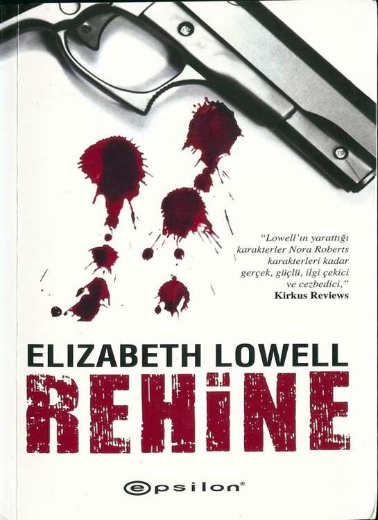

1
REHİNE
Elizabeth Lowell
Çeviri
Alp Sanlı
2
GİRİŞ
Lane Franklin kendi kendine korkmaması gerektiğini söyledi.
On beş yaşındaki çoğu genç yazı Ensenada'da geçirecek olsa sevinçten
coşuyor olurdu. Kumsallar, kızlar, bira... Hayat bundan daha iyi olmazdı.
Tüm Azizler Okulu Ensenada'nın işlek bir bölgesinde değildi. Nemli yaz
sıcağına rağmen küçücük bikinilerini giymiş kızlar okulun güzel ve kendine özel
sahilinde de gezmiyorlardı. Yine de okulun futbol sahası müthişti ve kalmaya başla-
dığı kulübe birinci sınıftı; Lane penceresi açıkken kampusun batı ucundaki sörf
dalgalarının sesini işitebiliyordu.
Dağınık dört yataklı kulübeleri, öğretmenler için daireleri, durumu iyi olmayan
öğrenciler için yatakhaneleri ve küçük bir kütüphane/eğlence merkeziyle Tüm Azizler
Okulu tek kelimeyle mükemmel bir tatil beldesini andırıyordu.
Fakat öyle değildi.
Şımarık ve kontrolden çıkmış çocukların nasıl emir alınacağını, nasıl düzgün
oturulacağını, nasıl ders çalışılacağını ve nasıl saygılı olunacağını öğrendiği bir kilise
okuluydu.
Sıkıcı.
Bunun başıma geleceğini biliyordum. Yaptığım şey bir suçtu.
O zamanlar suçmuş gibi görünmese de.
Lane parmaklarını yeni ve muhteşem bilgisayarının klavyesinde gezdirerek çok
kısa bir süre içerisinde okulun ana bilgisayarındaki F olan notlarını B'lere
dönüştürmüştü. Ne yazık ki bu durum fark edildi ve yakalandı... Dahası bu olaydan
sonra babası Lane'i daha disiplinli uluslararası yatılı bir okula kaydettirmeye karar
verdi.
3
En azından onu, askeriyenin bilgisayarını ya da o bankayı veya diğer beş altı
büyük kurumu hacklerken yakalamadılar; Lane bunun yanma kâr kalmasına ek
olarak eğlenmekten başka hiçbir şey yapmadı.
Sonra aklına parlak bir fikir geldi... Notlarını değiştirecek, bu sayede annesi de
baştan aşağı F'lerle ve D'lerle dolu olan karnesini görüp üzülmeyecekti.
Her şey yolunda.
Altı ay boyunca yaptım, iki ay daha yapabilirim.
Tüm oda arkadaşları üç hafta Önce ayrılmış olsa ne fark eder. Sessizliği
seviyordu, ayrıca bilgisayarını saklamak zorunda da değildi.
Birkaç hafta önce okuldaki futbol takımına serseri tipli birkaç öğrenci kabul
edildiyse ne olmuş yani. Bu haydutlar on altı yaşından çok yirmi altı yaşında
gösteriyorlarsa ne olmuş yani. O sahadayken hepsi onu hedef alıyorsa ne olmuş
yani. Onlardan çok daha hızlıydı ve diğerlerinden çok daha zekiydi.
Lane saatine baktı. Futbol antrenmanı birkaç saat içinde başlayacaktı. O
zamana kadar ödevini yapabilir, sonra da annesinin birkaç hafta önce okulun despot
müdürü görmeden içeri gizlice soktuğu bilgisayarında oyunlar oynayabilirdi.
Hâlâ neden bir bilgisayarı olmasına izin vermediklerini bilmiyordu. Yanlış hiçbir
şey yapmamıştı. Telefon hakkı yoktu, ayrıca kütüphanedeki bilgisayarı kullanması
da yasaktı. Tek yapabildiği mektup yazmaktı.
Eski usulde mektup yazmak yeterince boktan değilmiş gibi.
En azından Lane birinin yasak olan bu bilgisayarı bulmasından endişe etmek
zorunda değildi. Her öğrenci, odasında kendi bölümünü temizler ve kendi çamaşırını
yıkardı, hatta bazıları tüm okulun bulaşıklarını da.
İnternet bağlantısı olması müthiş olurdu fakat okulun ofislerine giriş
yapamadığından...
Bunu aklından bile geçirme.
4
Babanın seni burada tutmak için anneni zorlamasına izin verme. Ona bu şansı
verme. Dört aydır tek bir kara leken bile olmadı.
Oda arkadaşları ayrıldıktan sonra konuşacak arkadaşı kalmamıştı ama bu
sorun değildi. Yalnız olmaya alışkındı. Tüm Azizler'e ilk geldiğinde bildiği tek
İspanyolca kelimeyi yüksek sesle söyleyince bir kara lekesi olmuştu. Bazı çocuklar
İngilizce, bazıları Çince, Japonca ya da Fransızca konuşuyordu fakat çoğu Lane'in
yeni yeni ayırt edebilmeye başladığı değişik coğrafi aksanlarıyla İspanyolca
konuşuyordu. Dil konusunda hep yetenekli olmuştu ama bu ona fazlasıyla sıkıcı
geliyordu.
Şimdi ise yeni bir dil öğrenmek için geçerli bir sebebi olduğundan, herhangi
birinin tahmin ettiğinden çok daha akıcı bir şekilde konuşmaya başlamıştı. Ama
kulak misafiri olduğu hiçbir şey kendini daha iyi hissetmesini sağlamamıştı.
Son üç hafta gerçekten berbat geçmişti. Telefonu çalışmıyordu, birilerinden
onu tamir etmesini istediğinde ise kimse ona yardımcı olmamıştı. Öğretmenlerinden
birine evini aramak için telefonunu kullanıp kullanamayacağını sorduğunda, kadın
ondan sanki sıranın üstünde seks yapmasını istemiş gibi uzaklaşmıştı.
O gün, baş belası iki serserinin futbol sahasında gözlerini Lane'e dikip kasıla
kasıla yürüdüğü ve ona sessizce ölüm listelerinin en üstünde yer aldığını söylediği
gündü.
Üç hafta önce bir şey olmuştu.
Lane bunun ne olduğunu, buna neyin sebep olduğunu bilmiyordu. Tek bildiği
öğrenci olmaktan çıkıp başka bir şeye dönüştüğüydü, insana kendini esir gibi
hissettiren bir şeye...
Ne olmuş yani o iki pislikle yirmi bir gündür kendi kendime baş ediyorum.
Derslerimi hallediyorum, odam her zaman temiz ve düzenli. Öğretmenler de beni
seviyor.
Ya da üç hafta öncesine kadar seviyorlardı.
5
Annem ziyaretime geldiğinde gayet olağan bir şekilde ona babamın kararını
değiştirip değiştirmediğini, eve dönüp dönemeyeceğimi soracağım.
Birkaç haftalığına...
Ya da birkaç günlüğüne...
Hatta bir günlüğüne...
Sadece birkaç saatliğine...
Çünkü sınırı bir kez geçtiğimde bir daha asla buraya geri dönmeyeceğim.
Mecbur kalırsam sokaklarda bile yaşarım.
Lane durmaksızın kıyıya vuran dalgaların sesini dinledi ve kendi kendine
onların fısıldamadığını söyledi. Esir... Esir... Esir...
Fakat dalgaların tekrarlanan sesini duymak bile ona çelme takıp dirsekleyen,
tekmeleyen o iki serserinin seslerini hatırlamaktan iyiydi: Sen bizimsin pato, sen
ölüsün, odana gizlice girip, hayalarını kesip sana yedirteceğiz.
Lane dalgaların sesini ve aklındaki sesi durdurdu.
Ben esir değilim.
Korkmuyorum.
GÜNEY KALİFORNİYA
LAJOLLA CUMARTESİ SABAHI
1
Yargıç Grace Silva incelediği yasal belgelerden kafasını kaldırdığında telefon
dört kez çalmıştı.
Belki arayan Ted'dir.
Sonunda!
6
Kocasını, doğrusunu söylemek gerekirse yeni ayrıldığı eski eşini, başka bir
şekilde değil de yalnızca çocuğunun babası olarak önemsemeye başlayalı yıllar
olmuştu. Ve eğer bitmek bilmeyen kişisel bir üzüntüsü varsa bu da evliliğinde
başarılı olamayışıydı. Fakat bununla yaşamak zorundaydı.
Boşanmak ve tüm yasal işlemleri mümkün olduğunca medeni olarak halletmek
için çok uğraş vermişti.
Lane için.
Fakat gece ve gündüz günün her saatinde Theodore Franklin'e gelen
telefonlardan bıkmıştı. Franklin'in sadece yasal adresini bir zamanlar paylaştıkları
sahil evinde sürdürüyor olması, Grace ile yaşadığı anlamına gelmiyordu.
"Merhaba," dedi Grace.
"Ah, hanımefendi," dedi bir adam. "Ben Carlos Calderon. Kocanızla görüşmek
istemiştim."
Grace, Franklin'in eski kocası olduğunu belirtmeye gerek bile duymadı.
Calderon boşandıklarını bilecek kadar Ted ile samimi değilse, Grace'in de ona bunu
söylemek için hiçbir nedeni yoktu.
"Ted burada değil," dedi hızlı bir şekilde. Ve üç haftadır da yok ki bunu senin
çok daha iyi bilmen gerekiyor çünkü sen ya da senin çalışanlarından biri her gün
zaten arıyor. "Wilshire'daki ofisini, cep telefonunu ya da Malibu'daki dairesini
aramayı denediniz mi?" Ya da sürtük metresini?
"Evet, hem de birçok defa."
"Size yardım edebileceğim bir şey var mı?"
Grace üç haftadır aldığı, nazik bir "teşekkürler ama yok" cevabını almayı
bekliyordu.
Ama Calderon bunun yerine derin bir iç çekti ve "Yargıç Silva... Korkarım
Ensenada'ya acilen gelmeniz gerekiyor," dedi.
7
Silva ahizeyi sıkı sıkı kavradı. Bir yargıç olarak emir almak yerine vermeye
alışkındı. "Pardon?"
"Oğlunuz Lane ile ilgili."
"Sorun nedir?" diye sordu hemen. "Başı dertte mi?"
"Bu telefonda tartışılabilecek bir konu değil... İki saat içinde görüşürüz."
"Sorun nedir?"
"Hoşçakalın, Yargıç Silva."
"Bekleyin! Bana dört saat verin, sınırdaki trafiğin durumu nasıl olur bilmiyorum."
"Üç saat."
Telefon kapandı.
BİRLEŞİK DEVLETLER–MEKSİKA SINIRI
CUMARTESİ SABAHI
2
Grace üç saatlik sürenin sonuna doğru sınıra neredeyse ulaşmıştı. Güney
eyaletlerini bağlayan otobandaki altı şeridin "Dur ve Yavaşla" işaretleriyle dolu
olmasından ötürü trafik olağandan çok daha yoğundu. İyi olan tek şey ise Meksikalı
sınır görevlilerinin insanların mümkün olduğunca çabuk sınırdan geçmesine
yardımcı olmalarıydı. Amerikalılardan nefret etseler de Amerikan dolarına
bayılıyorlardı. Yetkililerin durdurdukları araçlar yalnızca iki kez bakmaya değecek
bayanların araçlarıydı.
Grace'in şeridindeki gümrük görevlisi iki yüz dolarlık RayBan gözlüklerinin
arkasında yarı uyuklar şekilde hareketsiz duruyordu. Uyuşuk bir hareketle elini
Grace'in koyu yeşil renkli Mercedes SUV'una doğru sallayarak kontrol noktasına
gelmesini işaret etti. Ardından açık sürücü camından onu gördü, öne doğru eğildi ve
durmasını söyledi.
8
Grace'in önündeki üstü açılabilen diğer üç araba ve içinde güney sınırına
heyecan aramaya, biraz da günah işlemeye gelmiş olan iki Kaliforniyalı sarışın kızın
olduğu araç da aynı şekilde durdurulmuştu.
Gümrük görevlisi, "İyi günler hanımefendi," dedi pis pis sırıtarak. Kibar
konuşmasına rağmen bakışları Grace'in göğüslerine kilitlenmişti. "Benim güzel
Meksika'mın neresine gidiyorsunuz?"
Öfke Grace'in içinde bir yılan gibi sessizce hareketleniyordu. Merhaba derken
çenesinin ve omuzlarının kasılmasına neden olacak kadar rahatsız olmuştu bu
durumdan. Genç bir kız iken tüm hayatına yetecek kadar maço saçmalığı çekmişti.
Bu sınır kovboyuna bir terbiye dersi vermeyi gerçekten istese de kıymetli zamanını
bu şekilde boşa harcamaya değmezdi.
Büyükannesi ona ne zaman mücadele etmesi, ne zaman sessiz kalması
gerektiğini öğretmişti.
Ensenada'ya acilen gelmeniz gerekiyor.
"Ensenada'ya," dedi Grace dişlerini sıkarak.
Görevliye pasaportunu verdi. Meksika Adalet Bakanlığı kimliği ön kapağın
hemen altındaydı. Meksika Hükümeti bu kimlikleri Amerikan yargıçlarına ve bazı
diğer yetkililere nezaketen veriyordu.
Gümrük görevlisinin kaim siyah kaşları güneş gözlüğünün üstünden yükseldi.
Pasaportu Grace'e iade etti ve eliyle geçiş izni verdi. "Zahmet verdiğimiz için kusura
bakmayın," dedi çabukça. "Bienvenido."
Grace aracının camını kapattı ve sınırı ardında bırakarak uzaklaştı. Bazen
canını neyin daha çok sıktığına karar veremiyordu: Erkeklerin kadınlardan üstün
olduklarını düşündükleri ve bunu göstermekten hiç çekinmedikleri Meksika mı?
Yoksa erkeklerin aynı şeyi düşünüp bunu göstermek yerine zekice sakladıkları
Amerika mı?Grace, Latin maçoluğunun yarattığı sorunlara yabancı değildi. Baba
tarafından büyükbabası ve büyük büyükbabası, anne tarafından ise Baja
Kaliforniya'da 1911 Magonista İsyanı'nın başarısız olması sebebiyle büyükannesi
*Bienvenido:Hoş geldiniz (İsp).
9
Meksikalıydı. Grace soy ağacında birkaç İskoç ve göçebe Norveçli olmasına rağmen
safkan Meksikalıyla karışık Amerika yerlisiydi. Aynı zamanda İrlandalı Meksikalı bir
babası ve Kazak Meksikalı bir annesi...
Dahası komünizm Asya'yı sardıktan sonra isyanda başarısız olup mülteci
olarak kaçan saf Kazak bir büyükannesi vardı baba tarafından.
Bürokratik belgeler onun Hispanic kökenli olduğunu belirtse de Grace kendini
kusursuz bir Amerikan melezi olarak görüyordu.
On üç yaşından beri Kazak olan büyükannesi tarafından Santa Ana Burrio'da
yetiştirilmesine rağmen Grace Tijuana'da kendini hiç evinde hissetmedi. Belki de
gençlik yıllarında Burrio'dayken Tijuana'dan nefret etti. Bunun önemi yoktu. Bir daha
bunu düşünmedi ve geriye dönüp hiç bakmadı.
Bu da büyükannesi Marta’nın ona öğrettiği bir başka şeydi.
La Revo, Tijuana’nın geleneksel girişi, açık hava seks dükkanları, erotik barlar,
fuhuş yuvası olarak kullanılan ya da vaat edilmiş topraklar olan kuzeye yasadışı
yollardan geçecek yabancılar tarafından tıka basa doldurulmuş otellerle ünlenmişti.
La Revo'da yalnız başına bir kadın çantada keklik demekti. İşte bu yüzden Grace
Otay Mesa'daki yeni liman kapısından girerek bu bölgeden uzak durdu.
La Revo'dan uzak durmak zamanı kısıtlı olan Grace'in biraz daha geç
kalmasına sebep olacaktı ama yine de bu yapmak zorunda olduğu bir şeydi. Maço
egemenliğinin hüküm sürdüğü Meksika'da kadın olmak için ödemesi gereken bir
bedel daha...
Otay Kavşağı onu Zana Rîo'nun içinden 16 Eylül Caddesi'ne götürdü.
Uluslararası bankadan sonra bir banka daha geçti, ardından sosyetik eğlence
merkezleri, daha çok banka ve bir Suudi prensini bile iflas ettirmeye yetecek kadar
bol uluslararası lüks mağaza zincirini takip etti.
Grace sınırdaki görevliye bile bu şaşaalı mağazalardan daha çok dikkat etmişti.
Kısa ve bir o kadar da insanın kanını donduran telefon görüşmesi aklında sürekli
yankılanıp duruyordu.
10
Oğlunuz Lane ile ilgili.
Ensenada'ya doğru, güneye ilerleyen geniş yola döndü ve gazı kökledi. Aracın
koca motoru mutlu bir şekilde gürledi. Havalandırma nemli muson havasını dışarıda
bırakıyordu.
Grace'in tedirgin edici düşüncelere dayanmaktan başka bir seçeneği yoktu.
Çantasındaki cep telefonu çalmaya başladı. Grace telefonunu alıp arayan
numaraya şöyle bir baktı ve arabayı yol kenarına çekti, çünkü bir Amerikan
senatörüyle hassas bir konuşma yaparken araba kullanmak istemiyordu.
Gelen aramayı cevapladı ve mutluymuş gibi konuşmaya başladı. "İyi akşamlar
Chad... Tabi eğer zaman dilimi gündüz olan bir yerde değilsen."
Senatör Chadvvick Chandler şaşkın bir ses tonuyla karşılık verdi. "Oh... Şu
arayanın kimliğini gösteren yeni telefonlar... Telefonunun olağan engellemelerden
etkilenmediğini sürekli unutup duruyorum. Bir an için senin kâhin olduğunu sandım."
"Öyleyim," dedi Grace keyifsiz ses tonunun fark edilmemesine özen
göstererek. "Kâhin olduğum için hafta boyunca benim telefonlarımı cevaplamadığını
anladım, hem de beşini de."
Chandler hafitçe kıkırdadı ancak cep telefonundan bu kıkırdama sesi daha
ikinci martinisini içerken boğazına zeytin takılan biri gibi çıkmıştı.
"İnan bana en sevdiğim bölge yargıcımı oyalama niyetinde değilim," dedi
Senatör. "Altın rengi güneşin altında bronzlaşarak, sörf yapıp at çiftliklerinde stres
atan sizin gibi zengin Kaliforniyalı çocukların aksine, biz aptallar başkentte size
yetişebilmek için günde çift vardiya çalışmak zorunda kalıyoruz."
"Benim ten rengim genetik. Yirmi yıldır da elimi bir sörf tahtasına dahi
sürmedim. At çiftliğine gelince... O tamamen Ted'in fikriydi. Senin gibi insanlara
bulduğu mali destekçilerin hoşuna gittiğini düşündüğü için..."
Grace bu sözleri üzerine ses tonunun fazlasıyla sinirli ve sabırsız çıktığını fark
ederek irkildi. Belki de Calderon bu yüzden onunla telefonda konuşmak yerine yüz
yüze görüşmek konusunda ısrar etmişti. Konuşkan ve hoşsohbet bir telefon
11
kullanma alışkanlığı yoktu, zaten işinden ötürü böyle bir şey için zamanı da
kalmıyordu.
"Ted ve sen değerli destekçilersiniz," dedi Senatör. "Telefonlarınıza ancak bir
iki gün içinde dönebiliyor olsam da her zaman minnettarlığımı sizinle paylaşıyorum.
Senin için ne yapabilirim?"
"Tayinim hakkında herhangi bir sorun olup olmadığını söyleyebilir misin?"
"Bunlar sabır isteyen konular, Grace."
"Anlıyorum," dedi Grace temkinli bir şekilde. "Fakat federal temyiz
mahkemesine ben bir atama istemedim, bana teklif edildi. İki aydan uzun bir süredir
bekletiliyorum ve benim bir kariyerim var. Eğer atama gerçekleşmeyecek ise bunu
bilmem gerekiyor... Bu sayede bölgesel duruşmalarda olup olmayacağımı öğrenmek
için beklerken boşuna zaman kaybetmek yerine yığınla birikmiş davalarıma
dönebilirim."
Hattın diğer ucundaki Senatör sessizce iç çekti ve elindeki martini kadehinin
ortasında duran zeytine gözlerini dikti. Ted'in evlenip başa çıkamadığı bu dişi
kaplanla uğraşmaktansa Ted'le uğraşmayı tercih ederdi.
"Şu anda bulunduğun pozisyona atanman için yapılan inceleme üç ay
sürmüştü, temyiz mahkemesine bir atama için çok daha derin inceleme
yapacaklardır."
Grace Senatör'ün sözlerinden çok sesinin tonuna dikkat kesilmişti. Kol saatine
şöyle bir göz attı. Bu görüşme için üç dakika ayırmıştı ve daha fazlası için zamanı
yoktu.
"Konuya dönelim. Zırvalıyorsun, bu da demek oluyor ki yolunda gitmeyen bir
şeyler var."
"Hayır, kesinlikle düşündüğün gibi değil. Sadece bu seviyede bir atama için
incelemeleri çok daha uzun sürüyor ve politika gitgide karmaşık bir hal alıyor. Ben
hâlâ senin Beyaz Saray tarafından aday gösterilip, senato tarafından federal temyiz
12
mahkemesine atanmış en genç bayan olarak kabul edilmeni bekliyorum, atanacak
en hoş bayan olacağından bahsetmiyorum bile."
"Bahsetme zaten!"
Chandler şaşırmış bir halde, "Ne?" diye sordu.
"Sakın bana patronluk taslama. Daha yeni pis bakışlı, Meksikalı bir gümrük
görevlisiyle uğraşmak zorunda kaldım, bugün biraz daha benzer bir pohpohlamaya
maruz kalırsam delireceğim."
Grace bir kez daha ses tonunun farkına vararak irkildi. Chad Chandler'ı on
yıldan beri tanıyordu, politikacıların standartlarına göre her zaman bir beyefendi
olmuştu.
"Affedersin," dedi hemen. "Şu an uğraştığım birçok şey var ve atamanın neden
bu kadar geciktiğini merak ediyorum. Bu gecikme boşanmam yüzünden mi?"
"Saçmalama onunla en ufak bir ilgisi bile yok, 21. Yüzyılda yaşıyoruz."
Bir süre her ikisi de sessiz kaldı.
Senatör martinisinden bir yudum daha aldı.
Grace saatine bir kez daha baktı.
"Her şey yolundaysa bu bekleyiş niye? İkimizde biliyoruz ki büyük büyük
babalarıma kadar zaten araştırıldım ve hakkımda keşfedilecek daha fazla bir şey
kalmadı."
Sessizlik...
Senatör içini çekti.
"Pekâlâ," dedi gönülsüzce. "PenSilvanya Caddesi'nin diğer ucundaki bazı
beyler biraz daha araştırma yapmak istiyor."
"Ne gibi ?"
"Oğlun nasıl?"
13
Çıplak vücutla elektrik yüklü tellere sürtünmüş gibi iğrenç, dayanılmaz, sarsıcı
bir acı saplandı Grace'in vücuduna.
"Lane... Gayet iyi."
Grace temkinli ve profesyonel duruşunun altında, içinde patlayıp yanıp
tutuşmakta olan panik fırtınasını gizlemek için ses tonunu değiştirmeye çalıştı. "Ne
oldu ki? Lane'in bu konuyla ne ilgisi var?"
"Lane'in uyuşturucu problemi olduğunu duyunca endişelendim, tabii bu durum
Beyaz Saray'daki bazı kişilerin de endişelenmesine sebep oldu. Bilirsin... Böyle bir
şey gerçekten başımızı ağrıtabilir."
Grace kelimeleri bir efekt aletinden çıkarmışçasına duyuyordu. Sesler
yankılanıyor, titriyor, gürlüyordu. Grace dinlemiyor sadece duyuyordu.
Uyuşturucu problemi mi? UYUŞTURUCU PROBLEMİ!
"Ben..." diyebildi sadece.
Chandler Grace'in cümlesini tamamlamasını beklemeksizin, "Bu bizi
endişelendiren bir durum," dedi. "Geçen oturumda buna benzer bir durum yaşandı.
Bir yargıç adayının kızı kokain bağımlısıymış... Muhalefet de bu olayı adayların
uyuşturucuyla hiçbir ilgisi olmamasını teklif etmek için kullandı. Çok fazla ilgi
uyandırmamasına rağmen neredeyse büyük bir gerginliğe yol açacaktı."
Grace güçlükle yutkundu.
"Kimse böyle bir karışıklığın temyiz mahkemesi seviyesinde yaşanmasını
istemiyor," dedi Senatör. "Bu günlerde düşünceleri öylesine değişken bir çoğunluk
var ki ne yapacakları kestirilemiyor. Böylesi bir durumda bizim de ihtiyatlı
davranmamız gerektiğini eminim anlıyorsundur."
Yanından uçarmışçasına geçen devasa bir tır Grace'in aracını rüzgârıyla
sarstı.
"Lane'in uyuşturucu problemi yok ki," dedi Grace.
14
Senatör önce tereddüt etti, derin bir iç çekti ve martinisinden bir yudum daha
aldı. "Bak bu öyle çok büyütülecek bir olay değil, tüm ailelerin başına gelebilen bir
şey Ayrıca kimse bu olayın adaylığını tehlikeye atacağını söylemiyor. Beyaz Saray
sadece hoş olmayan bir sürprizle karşılaşmak istemiyor o kadar."
"Ben az önce hiç de hoş olmayan bir sürpriz yaşadım bile," dedi Grace.
"Lane'in uyuşturucu problemi olduğunu kim söyledi sana?"
"Kimsenin söylemesi gerekmiyor, durum gayet ortada değil mi?"
"La Jolla'lı bir genç olduğu için mi ?"
"Hayır şu anda Ensenada'da bir rehabilitasyon kliniğinde olduğu için!" diyerek
sert bir şekilde karşılık verdi Senatör
"Tüm Azizler Okulu Ensenada'nın kuzey sahilinde bulunan özel bir lise ve tüm
kıtalardaki en iyi hazırlık okullarından biri. Roma Katolik Kilisesi tarafından
yönetiliyor... Ayrıca Güney Amerika, Avrupa ve Asya'daki zengin ailelerin çocukları
gibi Tijuana'daki en iyi ailelerin çocukları da orada okuyor. Orası madde bağımlıları
için bir rehabilitasyon merkezi değil!"
"Grace, özür dilerim seni kırdım. Kesinlikle amacım bu değildi."
"Bizim Lane’i Tüm Azizler Okulu'na uyuşturucu olmayan bir ortamda bulunması
için göndermediğimizi herkes bildiği sürece sorun değil. Lütfen, sana bu bilgiyi veren
her kimse ona Lane'in okuluyla ilgili gerçekleri anlat."
Uzun bir duraksama oldu, bir yudum daha, derin bir nefes daha, en sonunda
Chandler homurdandı. "Çok tuhaf, bunu bana kimse gelip söylemedi. Sanırım bu
benim kendi kendime edindiğim bir izlenim..."
Korku, içindeki dünyayı allak bullak ediyor olmasına rağmen Grace kendine
hâkim olmaya çalışarak, "Benimle Lane hakkında on aydır konuşmadığını ve
Washington'dakilerin oğlum hakkında bir şey bilmediklerini düşünürsek, sana bu
yanlış izlenimi veren Ted olmalı," dedi.
"Pekâlâ, işte şimdi bildin."
15
"Ted'le ne zaman konuştun?"
"İki hafta önce"
"Onu gördün mü?" Grace ses tonunun çok keskin bir şekilde tiz olduğunun
farkındaydı ama bu konuda yapabileceği pek bir şey yoktu.
"Birkaç saatliğine Washington'daydı, biraz gizli bir buluşma gibiydi, merhaba
demek için Hill'e birkaç dakikalığına uğradı."
Grace sessizce derin bir nefes aldı. En azından son iki hafta içinde Ted'i gören
birisi olmuştu. Bu da bir gelişme.
"Nereye gittiğini söyledi mi?" diye sordu.
"Hayır."
"Şu anda nerede olduğunu biliyor musun?"
"Hayır. Sesin üzgün geliyor."
"Üç haftadan uzun bir süredir onu ne gördüm ne de ondan bir haber alabildim,"
dedi Grace. "Görüştük diyince ona ulaşabilirim diye düşündüm haliyle..."
"Yolunda gitmeyen bir şey mi var? Yani ikinizin arasında? Son derece medeni
bir şekilde ayrıldığınızı sanıyordum."
"Öyleydi, hâlâ öyle, sadece isterdim ki..." Ortaya çıkıp Lane'in ihtiyaç duyduğu
baba olsun, haftada bir ya da en azından iki haftada bir Lane'i arayıp sorsun...
Bir başka kamyon nemli havayı gaza boğarak büyük bir gürültüyle yanından
geçip gitti.
"Neyse önemli değil," dedi Grace. "Ama Ted'le yeniden görüşürsen bana
ulaşmasını söyler misin? Onun sekreterliğini yapmaktan bıktım, ona ulaşamadıkları
için birçok insan bana kızıyor."
Senatör öksürür gibi, "Tamam aklımda," dedi. "Kendine iyi bak Grace. Temyiz
mahkemelerinde senin gibi bayanlara ihtiyacımız var."
16
"Erkeklere de!" diye sert bir şekilde ekledi Grace, ardından güldü. "Hoşçakal
Chad ve teşekkürler."
Grace aracını tozu dumana katarak kaldırdı ve Calderon'un konuşmak istediği
mevzunun uyuşturucuyla alâkalı olup olmadığını düşünerek hızla yola koyuldu.
TİJUANA, MEKSİKA
AĞUSTOS
CUMARTESİ 12.12
3
Joe Faroe elinde 60 cm uzunluğundaki meşeden oyulmuş, belli belirsiz soyut
bir sanat eserine benzeyen şeyi taşıyarak Tijuana Tuck & Roll dükkânının ön
kapısından dışarı çıktı. Meşe ağacından bu parçayı üreten dükkan kırk yıldan fazla
bir süredir aynı yerdeydi. Amerikalı sörfçülerin ve eski Amerikan arabası severlerin
özel dizayn araba işçiliği için sınırı geçtikleri ucuz bir dükkândı. Yün kaplamaların ve
el dikimi deri koltuk kılıflarının modası geçtiğinde dükkân da kendine farklı bir iş
modeli seçti.
Ekonomisi kaçakçılığa dayalı bu şehrin en iyi araç zulalarını hazırlamaya
başladı.
Tijuana, Tuck & Roll’daki üretimden tüm Meksika'nın faydalandığı açık bir sırdı.
Dükkân insanı parçalara ayırabilecek ölüm saçan jiletli tellerle ve zincirli çitlerle
çevriliydi.
Joe Faroe dükkânın gerçekte ne iş yaptığını bildiği gibi bu jiletli tellerin ne
derecede etkili olduğunu da biliyordu.
Bunu daha önce tecrübe etmişti.
Faroe yolun karşısına doğru baktı. Adam hâlâ oradaydı ve hâlâ aralık duran
kapıya yaslanıyordu. Faroe gözlerini ona dikince, adam başka yöne bakmaya
başladı ama yerinden kıpırdamadı.
17
Bir polis olmalı, diye düşündü Faroe.
Deri ceketi ve büyütmüş olduğu göbeği adamı ele veriyordu... Bazı polisler için
hayat ne kadar da rahattı.
Tamam, peki bu Meksikalı bir polis mi yoksa en son kaçakçılık yöntemlerini
çözmek için sınırın güneyinde çalışan Amerikalı bir polis mi?
Tutuklama yapmak için mi yoksa şantajla para sızdırmak için mi burada?
Faroe kapıyı zincir baklasıyla arkasından kapadı ve bakışlarını deri ceketi
kendisininki kadar pahalı olan polise çevirdi.
Adam, Joe yokmuş gibi davranıyordu.
Faroe ona bakmaya devam etti.
Sonunda polis ona şöyle bir bakıp başını salladı. Adam eski kurtlardandı.
"İyi günler," dedi Faroe yolun karşısından.
Polis omuzlarını silkti ve sigarasını yakmak için başka bir tarafa döndü.
Faroe engebeli, gizli tehlikelerle dolu kaldırım boyunca La Revo'ya doğru
ilerledi. Aracını Chula Vista'ya park etmiş, sonra da La Linea sınırına yürümüştü.
Şimdi ise Amerikan gümrük kapısına dönmek için bir taksiye ihtiyacı vardı. La Revo
ve Calle Cinco'nun köşesindeki zebra çizgili eşeklerin yanında her zaman taksi
bulunurdu.
Polis sigarasını bir telefon ya da telsizle konuşmaya yetecek kadar uzun bir
süre içinde bitirmişti. Faroe telsiz mi telefon mu fark edemedi ama bunu
önemsemedi de. Çok uzun yıllardan beri ilk defa vicdanı rahattı yanlış bir şey yap-
mamıştı.
Havada iğrenç bir çürük kokusu vardı. Pislik içinde ve kırık dökük olan
kaldırımlar hediyelik eşya satanlarla, pezevenklerle, hırsızlarla, dilenen
Kızılderililerle ve sadece oradan geçmeye çalışan normal insanlarla doluydu. Seyyar
satıcılar deri kutular, parlak renklerle boyanmış ahşap oyuncaklar ve uyuşturucudan
anal sekse kadar hemen hemen her şeyi kutlayan T-shirtler satıyorlardı. Dükkânlar
18
ise eski ve harap haldeydi, satacak çok fazla malları yoktu. Barlar kucak dansı
reklamları veriyordu. Hemen yanlarında beyaz önlükler içindeki sahte eczacılar
uygun fiyata Viagra ve kanser ilaçlan satıyorlardı.
Avenida Constitucion'un turistlerce tercih edilen bölgesi daha nezih bir yer
haline getirilmeye çalışılsa da gizli anlaşmaların, kaçamak ilişkilerin ve kolay
ahlaksızlığın pis kokusu içinde kalmıştı. Ucuz sigara, ucuz içki, ucuz seks... Yetki-
lilerin San Diego'da yasakladığı her şey birkaç mil güneye, Tijuana ya göç etmişti.
Faroe bir zamanlar kötü şöhretli Blue Fox'un bulunduğu blok boyunca yürüdü.
Kaldırımlarda müşteri arayan bar çalışanları birkaç adımda bir ona selam veriyordu.
"Hey, bayım, kadın ister misiniz? Küçük bir eğlenceye ne dersiniz? Çoook tatlı
kızlar var, hemen şurada, buyurun içeri girin."
İnce siyah bıyıklı, zayıf bir adam kurduğu cümlelerdeki tonlamayı satış rutinine
dahil ederek, işaret ve başparmağı arasında kavradığı kendi yanağından seksi ima
etmek için makas alıyordu.
Faroe bu içeri buyurmaları on beş yaşından beri duyuyordu. Sadece bir kez bu
kirli teklifi kabul etmiş, daha sonrasında da bunlara kayıtsız kalmıştı. Şimdiyse
tiksiniyordu.
Bunun bir gelişme olup olmadığını bilmiyordu.
Geçmekte olan sarı bir taksiyi eliyle işaret ederek durdurdu ve elindeki kutuyla
arka koltuğa geçti. Taksi şoförü hemen dikiz aynasından göz teması kurdu ve
ezberlenmiş bir sırıtışla, "Sizin için her şeyi bulabilirim bayım, kızlar belki? En temiz
olanları nerede biliyorum," dedi.
"La Linea," dedi Faroe. "Zona Rio bölgesinden geçerek git."
Şoför Faroe'nin gözlerine baktı, çenesini kapattı ve kuzeye yöneldi.
Taksi üç dakika içinde eski kasabanın itişilip kakışılan pis yollarını geride
bıraktı. Faroe artık Tijuana'nın uluslararası semtinin geniş bulvarına bakmaktaydı.
Faroe buraya ilk geldiğinde bu nehir bölgesi bataklık bir arazi üstünde açık bir
kanalizasyon olarak kullanılıyordu.Bu kanalizasyonun bir kısmı Tijuana Nehri
19
üzerinden okyanusa, Amerika Birleşik Devletlerinin Imperial Beach bölgesine
gönderiliyor, bir kısmı da sınırın güneyinde kalıyordu.
Nehir hâlâ lağım suyu taşımaktaydı ama artık yeraltındaydı. Yerüstünde ise
dünyanın hemen hemen her şehrinde rastlanan alışveriş merkezlerine rakip
olabilecek mağazaların yer aldığı Paseo de los Heroes gibi caddeler bulunuyordu.
Alışveriş merkezleri. Diskolar. Gece kulüpleri. Restoranlar.
Bankalar.
Daha ve daha çok bankalar.
Hepsi birer işmerkezi olan gökdelenler San Diego'dakilere kıyasla çok daha
mütevazı görünüyor olsa da bir ya da iki katlı binaların oluşturduğu Tijuana için son
derece parıltılı, yeni ve devasaydılar. Tüm paraların geldiği yer.
Yılda otuz milyon dolar dış gelirin bir şehre neler yapabileceğini gösteriyor, diye
düşündü Faroe. Bu paranın sınırın kuzeyindeki yoksullardan ve uyuşturucu
bağımlılarından geliyor olması utanç verici.
Fakat bu artık onun problemi değildi. Steele ve St. Kilda Danışmanlığına lanet
olsun... O artık ihaneti, aldatılmayı, kazıklanmayı bırakmıştı; yaşadığı dünyada siyah
bazen beyazdı, beyaz da bazen siyah...
Bırakın bazı salaklar kurtulmak istemeyen dünyayı kurtarmak için kıçını
tehlikeye atsın, hepinize lanet olsun...
Yine de Faroe etraflarında dönen para oyununa katılamayan Tijuana'da
yaşayan fakir insanlar için üzülüyordu. Başkaları kaçakçılığın tatlı kazancıyla
şişmanlarken, onlar güçbelâ kötü bir yaşam sürmek için mücadele veriyorlardı.Çok
yazık, çok üzücü ve bunun için benim yapabileceğim hiçbir şey yok.
Çoktan kırılmış mızrağımı emekliye ayırdım ve zavallı yaşlı Rosinante'yi
otlamaya bıraktım.
Ve Steele bunu anlayamazsa, hepsini geçmişe gömebilir.
20
Taksi Faroe'yi giriş kapısı denilen tarafsız bölgenin ucuna bıraktı. Faroe
satıcılarla ve sahte eczacılarla dolu bir sokak boyunca daha yürüdü. Amerika
sınırına bir blok kala, güneyde, satıcıların yerini Los Angeles, Central Valley,
Wenatchee, Burlington ve Spokane'e ya da bin beş yüz mil ötedeki güneyin pamuk
tarlaları olan Kansas, Chicago, Colorado, New York'a ve ucuz işçileri seven tüm
diğer kentlere geçiş sunan seyahat acenteleri aldı.
Faroe sınır koruma ajansının yönetim binası önünde vize almak için bekleyen
insanların oluşturduğu uzun, sinsi sırayı geçti. Daha önceden bunu defalarca yapmış
birisi gibi konser meydanı büyüklüğündeki işlem merkezine açılan sağlam kapıları
iterek açtı.
Amerikan topraklarına uzanan son durak.
Belinde tabancası olan mavi gömlekli gümrük görevlisi Faroe'nin kutusunu
gördü ve onu Xray tarayıcısına koymasını işaret etti.
Faroe elindeki kutuyu Xray tarayıcısının hareketli platformuna koyup
beklemeye başladı. İkinci bir gümrük görevlisi tarayıcı ekranını incelemeye koyuldu.
Faroe istemsizce metal dedektörüne doğru yürüdü. Artık bu işi yapmıyor olsa
da gizli zulalama tekniğinin bu aletler karşısında ne derecede etkili olduğunu merak
ediyordu.
Tarayıcı operatörü, temiz bir işçilikle kesilmiş bu meşeden ahşap şeyi uzun
uzadıya incelemek için hareketli platformu durdurdu. Gizli bölmenin çıkıntısı gözle
görülmeyen mavi Xray ışınlarıyla belli oluyordu.
Yaka kartında isminin "Davison" olduğu yazan görevli hareketli platformu
geriye alarak kutuyu oradan bir kez daha geçirdi, ardından biraz daha inceledi ve
dirseğindeki bir tuşa bastı.
Faroe göz ucuyla mavi gömlekli iki görevlinin daha geldiğini gördü.
"Bu size mi ait efendim?" diye sakince sordu görevli.
"Evet."
21
Görevlilerden biri Faroe'nin kolunu kavradı ve asabi bir ses ton tonuyla, "Lütfen
benimle gelin," dedi.
Çağırılan görevlilerden biri Faroe'nin Meksika'ya geri dönüş yolunu kapayacak
şekilde yerini aldı, diğeri ise Amerika çıkışında duruyordu. Her ikisinin de eli
kalçalarının üzerinde duran silahlarının üzerindeydi.
"Tabii ki," dedi Faroe kolunu kavrayan görevliye. "Kutuyu da getirmemi ister
misiniz?"
"Sorun değil, onunla biz ilgileniriz."
Yönetici olan bir müfettiş kutuyu hareketli platformdan aldı ve yolu açtı. Faroe
ellerini açıkça görebilecekleri bir konumda tutmaya özen göstererek geride kaldı.
Xray'in gizli bölmelerden birini bulduğu gayet açıktı. Ama Faroe'nin asıl
merak ettiği diğer gizli bölmenin de bulunup bulunmadığa.
Kapının üzerinde "İnceleme Odası" yazıyordu ama içerisi bir sorgulama
odasıydı. İçeride bir masa ve hırpalanmış iki adet sandalye vardı. Faroe’ya eşlik
eden iki görevli onu odaya bırakıp önceki yerlerine geri döndüler.
Rozetinde adının "Jervis" olduğu yazan yetkili kutuyu odadaki masanın üzerine
koydu ve soğuk bir ifadeyle Faroe’ya baktı. "Başı belada olan birisine göre fazla
sakin görünüyorsun."
Faroe kariyeri boyunca sınır girişleri konusunda yeterince bilgi edinmişti; bu
oyunun nasıl oynandığını biliyordu. Gümrük görevlileri vücut dilini okurlardı.
Faroe'nin boyun nabzı, gözleri, davranışı ve hareketleri gümrük görevlisinin bir şey
bulmasına izin vermiyordu.
"Temizim," dedi Faroe. "Bu yüzden de sakinim. Kutunun boş olduğunu siz de
gördünüz."
Jervis kutuyu işaret etti ve Faroe'nin pasaportuna baktı. "Başınızı daha fazla
belaya sokmadan önce bir kez daha düşünmek ister misiniz... Bay Faroe?"
"Düşünecek bir şey yok. Temizim."
22
"Cebindekileri masaya boşalt. Sonra ayağa kalk ve duvara yaslan, ellerini
yukarı kaldır, bacaklarını da iyice aç! Anladın mı?"
Faroe tartışabilirdi ama uğraşmadı. Jervis sekiz saatlik bir vardiya ile
çalışıyordu. Tüm zamanını Faroe ile uğraşarak geçirebilirdi ya da sırada bekleyen
diğer yüz kişi ile.
"Evet, anladım." Faroe cebindekileri masanın üzerine boşalttı, söylendiği
şekilde duvara yaslandı ve görevli profesyonel bir şekilde üstünü ararken, "Sakin
olun herhangi bir şey taşımıyorum," dedi.
"Ben yaşlı bir adamım Bay Faroe ve bu yolu temkinli bir şekilde kat ettim."
Jervis doğrulmadan önce Faroe'nın baldırında ya da ayak bileğinde olası bir bıçak
olup olmadığını kontrol etti. "Masaya git ve cebinden çıkardıklarını topla?
Faroe pasaportunun, anahtarlarının, parasının bulunduğu masaya gitti.
Ceplerini doldururken Jervis de kutunun üzerindeki kâğıdı yırtarak açtı. Bulduğu
meşe güzel görünüyordu, hızlıca sallamaya başladı. İçinde bulunan şeyin ses çıka-
racağını düşünüyordu.
Umduğu gibi olmadı.
Jervis homurdandı. "Tarayıcıda içinde bir boşluk olduğu belli oldu, biz
buralarda böyle şeylerden hoşlanmayız, başınız büyük belada bayım."
"Mavi gömleğimi çıkardığımdan beri kurallar değişmediyse, başım belada falan
değil," dedi Faroe. "Kutu boş."
"Yani burada bir zula var. İtiraf ediyorsun."
"Bu bildirim formlarına göre bir mücevherat kutusu. Bir bayanın içine küpelerini
koyacağı hoş bir meşe parçası."
Jervis gözünü Faroe’ya dikti. "Gerçekten polis miydin? Nerede? Burada mı?"
"Evet," diyerek omuz silkti Faroe. "Üzerinden yıllar geçti ama burada çalıştım."
Jervis ahşabı daha yakından incelemeye başladı. Yaklaşık bir dakika sonra bir
köşeyi işaret etti.
23
"İşte orada," dedi. "Gizli gözün kesilme noktasını neredeyse görüyorum. İyi
işçilik."
Faroe müfettişin meşenin dış tarafındaki gözü bulmuş olmasından
endişelenmedi. Bu meşe parçayı teknesinde şu anda eksik olan sintinesine
takacaktı. Ve teknesine bu parçayı eklediğinde içinde bir zula olduğunu bilen birisi
için bile bulmak inanılmaz derecede zaman ve zahmet alacaktı.
"Mücevherat kutusu öyle mi?" Müfettiş gizli bölmeyi bulmak için parmak
uçlarını meşenin üzerinde gezdirmeye başladı. "Buradan başka bir yerde olamaz,
burada bir yerde olması lazım."
"Öyle mi?"
Jervis meşedeki en kusurlu gözüken boğumu kurcalayıp dürttü ama hiç bir şey
olmadı. "Hmm..."
"Önemli değil," dedi Faroe. "Tarayıcıdan geçirdiniz zaten içi boş."
Jervis tıslarcasına havayı dişlerinin arasından içine çekti. "Buna el koyup sonra
da yakmalıyım."
"Pek de iyi bir fikir değil. Buna gasp denir biliyorsun ki yasalara aykırı."
Gümrük müfettişi deri botlarının topukları üstünde dönerek Faroe'nin vücut
dilini okumak için uzaklaştı ve odaya derin bir sessizlik yayıldı.
"Defol git buradan!" dedi Jervis en sonunda kafasını Amerika Birleşik Devletleri
tarafındaki kapıya doğru sallaya
rak. "Fakat proktolojistini kovabilirsin, çünkü o tatlı
kıçını bilgisayara sokarsan bir daha ne zaman hangi sınırı geçersen geç tüm vücut
boşlukların aranacak."
Faroe onaylarcasına kafasını salladı. "İyi günler."
Kutuyu aldı ve kapıdan dışarı çıktı. Uzun adımlarla arabasına doğru ilerledi.
Oradan da Oceanside Federal Bankası'ndaki güvenlik kasasına gidecekti.
* Proktolojist:Anüs ve rektum hastalıkları uzmanı
24
Faroe emekliliğini zor yollardan sağlamıştı ve emekliliğinin tadını çıkarmayı
planlıyordu.
İnsanları kendi salaklıklarından kurtarmanın canı cehenneme.
TÜM AZİZLER OKULU
CUMARTESİ, 12.20
4
Otoyoldaki beklenmedik bariyer Grace’e sinir içinde terleyerek geçirdiği on
dakikaya mal olmuştu. Meksikalı güvenlik güçleri ellerindeki hafif makineli tüfeklerle
arabaları inceliyorlardı. Grace buradan geçtikten sonra Tüm Azizler Okulu'na giden
toprak yolda 'da yeni bir denetim noktasına ulaştı.
Temiz tıraşlı, Levi's kotlu ve bol, pamuklu gömleğiyle genç bir adam yolun tam
ortasında duruyordu. Siyah, ölümcül görünümlü, hafif makineli tüfeğinin deri askısı
omzundan geçiyordu. Dirseğini tüfeğine yaslayarak Grace'in SUV 'unu inceledi.
Gündelik gömleği hariç gümrükte bekleyen karanlık adamlar gibi görünüyordu.
Silah kesinlikle aynısıydı.
Grace silahlardan nefret ediyordu. Bir silahı vardı ama sadece o modeli
kullanmayı biliyordu ve ondan da nefret ediyordu. Silahların çağrıştırdığı... Yasaların
insanları her zaman her yerde koruyamayacağı mesajından da nefret ediyordu.
Grace yolun ortasında dikilen silahlı adam dışında, yolun kenarına park etmiş
siyah camları olan bir Chevrolet olduğunu fark etti. Sürücü ve yolcu kapısı açıktı,
içinde iki koruma daha vardı; biri Levi's kot ve beyaz T-shirtlü diğeri ise beyaz
gömlek, beyaz kravat ve siyah takım elbiseliydi.
Her ikisinin de kucaklarında piyade tüfekleri vardı.
Grace endişeli bir halde aracını durdurdu, camı indirip pasaportunu dışarı
uzattı. "Oğlumu görmek için geldim."
25
Grace'in pasaport bilgilerini inceleyen görevlinin gözleri açıldı. Sağ eli hafif
makineli tüfeğinin kabzasına kaydı. İşaret parmağı ise tetiğe doğru kıvrıldı. Döndü ve
yol kenarında park halinde duran Chevrolet'teki adamlara ıslık çaldı.
Takım elbiseli olan telsizi alarak konuşmaya başladı. Grace yüzünde hiçbir
ifade olmaksızın beklemeye devam etti. Poker oyuncusu yüzüne sadece kart
oynayanların değil Grace gibi yargıçların da ihtiyacı vardı. O da yüzündeki ifadeleri
herhangi bir poker oyuncusu gibi, hatta birçoğundan çok daha iyi saklayabiliyordu.
Fakat ifadesiz yüzünün altında, aslında, deli gibi endişeleniyordu.
"Camlar açık kalsın, porfavor” dedi yolun ortasında duran adam.
Bu sözleri nazik bir ses tonuyla söylemiş olsa da bu bir rica değil bir emirdi.
Grace, Ensenada'nın sıcak nemli havası aracın içine doluncaya kadar cam
açma tuşlarına bastı. Güneş madeni muson neminin sisi arkasında kalıyordu ve
sıcaklık otuz sekiz derece civarında seyrediyordu.
Bu yüzden terliyorum. Hava çok sıcak.
Ama durduğu yerde soğuk terler döküyordu Grace.
Genç adam Mercedes SUV'un etrafında bir tur attı. Açık camlardan aracın içini
dikkatlice kontrol etti ve bagaja baktı.
Takım elbiseli olan telsizle konuşmaya devam ediyordu. Grace ne
konuştuğunu duyamıyor olsa da adamın bakışlarından kendisi hakkında
konuştuğunu anlayabiliyordu.
Tüfekli olan görevli kontrolünü tamamladı ve omzunun üzerinden park
halindeki araca baktı. Chevrolet'teki adam telsizi dinledi ve başını salladı.
"Devam edin hanımefendi, fakat derhal futbol sahasına gidin" diye emretti.
"Neden? Bir sorun mu var?"
Porfavor: lütfen (İsp.)
26
Adam, "Futbol sahasına" dedi kısaca ve kaba bir şekilde yola devam etmesi
için işaret etti. Sağ eli hâlâ tüfeğinin tetiğindeydi.
Bu tehdit iması Grace'in endişesini öfkeye çevirdi. Görevliye tam ne kadar kaba
bir pislik olduğunu söyleyeceği sırada, kare kesimli bol gömleğinin altındaki
kemerine takılı olan parlak, deri plakalı rozeti gördü.
Bu rozeti tanımıştı. Bu rozet ona Grace'in Meksika kimlik kartını veren kurum
tarafından verilmişti.
Meksika Adalet Bakanlığı...
"Federal polis misiniz?" diye sordu hemen.
Görevli Grace'in gözlerine baktı. Gömleğinin eteğini rozetinin üstünü
kapayacak şekilde hızlıca çekti.
"Git" dedi öfkeli bir şekilde. "Şimdi, çabuk!"
Grace tereddüt ederken, görevli tüfeğini ona doğru doğrultarak gitmesini işaret
etti. Tüfeğiyle yaptığı işaret yüzüne öylesine yakındı ki Grace namlunun içindeki
karanlığı görebilmişti.
Grace bir anda gazı kökledi.
Motorun verdiği ani kuvvetle patinaj yapan büyük tekerler tozu dumana kattı.
Görevli geriye sıçradı ve bağırarak Grace'in anlamamayı tercih ettiği bir şeyler
söyledi.
Tek istediği oğlu Lane'i görmek, ona sarılmak ve neler olup bittiğini öğrenmekti.
Futbol sahasına ulaşması bir dakikadan az sürmüştü. Saha okulun içinde,
yönetim binasıyla okyanusa bakan kumluk uçurumun arasında yer alıyordu. Her iki
yanında da sahadaki müsabakaya tezahürat yapan enerjik bir kalabalık toplanmıştı.
Grace aracını kalelerden birinin arkasındaki boş yere çekti ve motoru durdurdu.
Karanlık bakışları sahayı taradı. Oğlunu görmek için deliriyordu.
Tanrıya şükür, işte orada.
27
Lane, annesinin gözüne sahada yanmakta olan bir meşale gibi çarpmıştı.
Öylesine süratli ve dengeli koşuyordu ki on beş yaşından çok yirmi yaşında gibi
görünüyordu. Topu son derece şık hareketlerle yaklaşan iki savunma oyuncusunun
arasına doğru sürdü ve son anda aniden kayan savunma oyuncularının üstünden
sıçrayarak onları geride bıraktı. Topla tekrar buluştu ve kaleye yöneldi. Belki
yaklaşan fırtınayla yüklü sıcak, nemli ve ağır havanın kokusundan... Belki zayıf,
süratli ve kendine güveni tam olan Lane'den... Belki de ayın sadece bu zamanından
ötürü... Grace bir anda unutmak için çok çabaladığı bir şeyi hatırladı. On altı yıl önce
kendisini bağlayan şeylerden kaçıp Joe Faroe ile bir hafta sonu geçirmişti. Faroe
Grace'in hayatı boyunca karşılaştığı her riski göze alabilen tek adamdı.
Muson fırtınasının dev dalgaları sahili ritmik bir şekilde döverken, Faroe’nin
zayıf ve kaslı vücudu Grace’in bedeninin üzerinde gidip geliyordu. Vücutları
kusursuzca birbirine uyum sağlamıştı.
Grace anıları inkâr edercesine başını sertçe salladı. Ted ile evlendiğinde
karnındaki bebeğin babasının Ted mı Faroe mı olduğunu gerçekten bilmiyordu, yine
de onun büyük olasılıkla Ted'in çocuğu olduğunu düşünüyordu.
Ve bebeği kollarına aldığında babasının kim olduğu artık önemli değildi.
Hayatında ilk defa sırılsıklam âşıktı. Lane'in minik elleri, kusursuz tırnakları ve
muhteşem, tamamen mutlu ela gözleri onun dünyası haline gelmişti.
Çok hızlı büyümüştü.
Çok hızlı.
Grace Lane'in futbol oynamasını istememiş olsa da futbolun ragbiden çok daha
güvenli olduğunu fark ederek bunu kabullenmişti. Şimdiyse, oğlunun başka sağlıklı
gençlerle mücadele edişini görünce mutlu olmuştu. Biyolojik babası gibi Lane de
doğuştan sporcuydu.
Lane zigzaglar çizerek ve topu vücudunun bir uzvu gibi kullanarak rakip yarı
alana iyice sokuldu. Bir anda tüm savunma oyuncuları her yönden Lane'in üstüne
doğru hücuma geçti.
Tanrım... Hepsi de Lane'den çok daha iri ve kuvvetli.
28
Kendi takım arkadaşları bile geride kalırken Lane hücuma devam etti. Terini
tutması için kırmızı bandana takan savunma oyuncusu Lane'e doğru kayarak onu
durdurmaya çalıştı, yaptığı müdahale topa değil Lane'eydi fakat Lane onun üs-
tünden sıçradı, bu sırada diğer bir rakip takım oyuncusu havaya yükselmekte olan
Lane'e ayağını uzatarak çelme taktı ve Lane'i yere yapıştırdı.
Grace aracının kapısına uzanıyordu ki hakemin düdüğü duyuldu. Takım
arkadaşları Lane'in etrafında toplanırken, hakem şortunun arka cebinden çıkardığı
sarı kartı kayan oyuncuya gösterdi. Kayan oyuncu yerden kolayca kalkıverdi ve
kalkması için Lane'e meydan okuyarak onun tepesinde belirdi.
Lane başını sallayıp dizlerinden ve ellerinden destek alarak güçlükle ayağa
kalktı ve ona saldıran oyuncuya ulaşmak için hakemin etrafından geçti. Lane'le yüz
yüze duran oyuncunun fiziksel olarak ve yaşça büyük olduğu açıkça görülebiliyordu.
Kırmızı bandanası omzuna kadar uzanan siyah saçlarını hissiz yüzünü
kapamayacak şekilde tutuyordu. Bir sporcu olduğu kadar bir savaşçı da olabilirdi.
Sırıtışı sakin ve soğuktu.
Hakem hızlıca bir şeyler söyleyerek ve kollarını sallayarak aralarına girdi.
Bir süre sonra Lane arkasını döndü ve hakemin verdiği köşe vuruşunda takım
arkadaşlarına katılmak üzere koşarak uzaklaştı.
Grace rahat bir nefes alabildiğini fark etti. Oğlunun sinirli bir yapısı vardı; bu
özelliği onun cesur davranmasını sağlıyor olsa da mantıklı davranmasını
engelliyordu.
Tıpkı Joe Faroe gibi.
Grace maç devam ederken yolcu tarafındaki camı birinin nazikçe tıklattığını
fark etti. Camdan baktı ve Carlos Calderon'un cana yakın kahverengi yüzünü gördü.
Ağzındaki geleneksel siyah Havana purosuyla gülümseyerek Grace'e yolcu
kapısının kilidini açmasını işaret etti.
Omuzlarındaki askılardan sarkan silahlarıyla ya da ellerinde olağan şekilde
tuttukları namluları yere bakan, hafif makineli tüfekleriyle silahlı birçok adam
29
Calderon'un etrafındaydı. Gümrük görevlileriyle aynı küstah ve sinirli bakışlara
sahiptiler.
Acaba onların da federal rozetleri var mıydı?
Fakat Grace iç sesini yüksek sesle dışa vurmadı. Kapının kilidini açan tuşa
bastı ve koltuktaki çantasını aldı. Calderon kapıyı açtığında Grace ondan purosunu
aracın içinde içmemesini rica etmeyi düşündü fakat sonra ağzını kapalı tutup
Calderon'un görmeyi beklediği uyumlu, Meksikalı bir bayan gibi davranmaya karar
verdi. Bu oldukça sinir bozucu bir durum olsa da oğlunun çelme takılıp yere
serilmesi kadar sinir bozucu değildi.
Meksika usulü daha samimi bir selamlaşmayı engellemek için elini uzatarak,
"Merhaba nasılsınız?" dedi.
"Sizi görmek çok hoş Sayın Yargıç" dedi Calderon aksansız bir şekilde.
Başını biraz öne eğip, yumuşak ve manikürlü elini uzatarak Grace ile tokalaştı.
Grace'in elini olması gerekenden çok daha uzunca bir süre avucunun içinde tuttu.
Belki yanlışlıkla olmuştu belki de bu, güçlü bir adam olduğunun göstergesiydi.
Kibarlığın sınırlarını belirleyen Calderon'du, Grace değil.
"Ted'i sizinle birlikte gelmeye ikna edemediğinize çok üzüldüm" dedi Calderon.
Grace elini çekti ve "Ted'in uzakta olduğunu size söylemiştim" dedi.
Calderon ağırbaşlılıkla omuz silkti. Bu Meksikalı bir erkeğin karakterize
hareketiydi. Calderon sınırın her iki tarafında da rahatça yaşamıştı ama Amerika
doğumluydu. Hatta o ve Grace Santa Ana'da aynı özel lisede okumuşlardı. Buna
rağmen Calderon sınırın güneyinde yaşayan Meksikalı bir iş adamı gibi resmi bir
şekilde davranıyordu.
Grace Calderon'un Amerikan versiyonunu tercih ediyordu.
"Çok meşguldüm" dedi Grace sakince. "Uzun bir zamandır Ted ile
konuşamadığım için mesajınızı ona iletme fırsatım olmadı."
Calderon purosundan derin bir nefes alıp, "Ne üzücü" dedi.
30
"Edge Şehri Yatırım Şirketi'nin çok önemli bir müşterisisiniz" dedi Grace. "Niçin
şirketi arayıp Ted ile görüşmek istediğinizi söylemiyorsunuz?"
Niçin benimle uğraşıp oğluma bir şey olmuş gibi beni korkutuyorsunuz?
Fakat Grace bunu da yüksek sesle ifade etmedi. Kazak olan büyükannesi bu
konuda da son derece açıktı: Korktuğunu asla belli etme.
"Birçok defa denedim," dedi Calderon kederli bir gülümsemeyle.
. Kalın mavi duman döne döne tüm aracın içini doldurmuştu.
Grace lağım kokusu alsa bile suratını ekşitemeyeceği mahkeme salonu
ifadesini takındı.
Calderon görevlilerin arkasında duran bir grup adama şöyle bir göz gezdirdi.
Purosundan derin bir nefes daha aldı. Puronun ucu sıcak ve kıpkırmızıydı.
Grace Calderon'un gergin olduğunu fark etti.
Bu iyi değildi... Hem de hiç iyi değildi. Grace, Calderon kadar güçlü ve zengin
bir adamı neyin bu kadar korkuttuğunu bilmek dahi istemiyordu.
"Beni buraya Lane hakkında konuşmak için çağırdınız, bunun için Ted'e
ihtiyacımız yok," dedi.
Ardından aracın kontağını çevirdi ve dumanın çıkması için tüm camları açtı.
Hamile iken sigara dumanından nefret eder, bu yüzden sık sık söylenirdi. Durum
şimdi de pek farklı sayılmazdı.
Calderon purosundan bir nefes daha alıp aracın ön camına doğru bir bulut
halinde üfledi. "Pardon, demek istediğimi size tam olarak anlatamadım. Oğlunuzun
iyiliği için Ted'in yardımcı olabileceği bazı durumlar var."
Grace'in kalbi kaburgalarının altında dövülüyor gibiydi. "O halde açık konuşun,
Ted'in en eski arkadaşlarından ve en önemli iş ortaklarından biri neden bana
gözdağı veriyor?"
Calderon ona şaşırmış bir halde baktı. "Gözdağı mı?"
31
Grace ilerideki silahlı adamları işaret ederek, "Bana tüm bu silahlı adamların
arasına gelmemi söylediniz, daha önce burada yoktular."
"Görevlilerden mi bahsediyorsunuz? Onlar sadece önlem olarak buradalar.
Birçok zengin aile, çocuklarını Tüm Azizler'e gönderiyor ve maalesef nadiren de olsa
Meksika'da kaçırılma ve Amerikalı velileri rahatsız edebilecek bazı güvenlik sorunları
yaşanabiliyor."
"İlginç. Eminim öyledir," dedi sakince Grace. "Peki, bunun Ted ile alakası ne o
zaman?"
Ve Lane ile.
"Lane'i Tüm Azizler'e kaydettiren Ted olduğu için..." dedi Calderon. "Okulu
işletenler bana Ted'le iletişime geçmemi söyledi."
"Ted'in olduğu kadar Lane'in velayetinden ben de sorumluyum, onun iyiliği için
her ikimizin de bu konuda söz hakkı var."
"Velayet. Çok hoş bir terim... Hem de yasal... Mahkemede söylediğiniz
şeylerden biri gibi geliyor kulağa. Fakat burada, Meksika'da, yasal sistem pek de
sizinki gibi işlemiyor. Burada çok daha gerçekçi yaklaşımlar söz konusu."
"Oğlumun iyiliği için Meksika'da söz sahibi olmadığımı mı söylemeye
çalışıyorsunuz?"
Calderon iç çekti. "An itibariyle hayır, yalnızca Ted söz sahibi."
"Bu durumda Lane'i hemen okuldan alıyorum. Ted'i bulduğunuzda bu velayet
durumunu onunla uzun uzun konuşursunuz!"
Calderon Grace'in yüzüne bakmadan, "Lane'i götürmeniz mümkün değil," dedi.
"Çünkü Ted; Lane'i yalnızca babası tarafından okuldan alabileceğine dair bazı
belgeler imzaladı." Sinir bozucu bir şekilde gülümsedi. "Şimdi Ted'i buraya
getirmenizin neden bu kadar önemli olduğunu anlayabildiniz mi?"
Grace tüylerinin diken diken olduğunu hissetti. Bu sinir bozucu sırıtmayı
Barrio'da, genç vatoz, çete liderlerini dövdüğünde görmüştü. O anda... Baja
32
California'da ve tüm Meksika'da güçlü, hatta çok güçlü bir adam olan Carlos
Calderon'un birinin habercisiymiş gibi davrandığını fark etti.
Calderon'u bile korkutabilecek kadar kuvvetli biri...
İsa, Meryem, Yusuf... Bu kötü işten sıyrılabilecek miyim? diye sessizce sordu
kendi kendine.
Tüm yetişkin hayatını bu batağı unutarak, yok sayarak, geriye bakmadan,
yükseklere hızlıca tırmanarak geçirmişti. Yükseklerde havalar temiz, geceler
güvenliydi, hatta kadınların güç sahibi olması için silahlı ve güzel olmaları da
gerekmiyordu.
"Carlos..." Grace'in sesi mahkeme salonunu yöneten bir yargıç gibi sakin ve
alçak tondaydı. "Lane'in burada bir mahkûm olduğunu ve onu yalnızca Ted'in
serbest bırakabileceğini mi söylemeye çalışıyorsun?"
Calderon sahaya, hakemin düdüğünü çalıp maçı bitirdiği yere bakarak,
"Üzgünüm," dedi. "Ancak bu şekilde olabilir."
Calderon araçtan çıktı ve yanlara doğru işaret etti. İki adam kalabalıktan ayrılıp
uzun adımlarla Mercedes'e doğru ilerlemeye başladı.
"Lütfen," dedi Calderon aceleyle. "Benimle birlikte şu adamı selamlamak için
durun. Basit bir saygı göstergesi, bunu bir yargıç olarak anlamakta güçlük
çekmiyorsunuz değil mi?"
Grace istemeye istemeye araçtan çıktı ve bir kol mesafesinde Carlos'un
yanında durdu. Yaklaşan adamlardan biri siyah saçlı bir Meksikalıydı. Temiz ama
buruşuk pantolonu, deve kuşu derisi botları ve inci düğmeli beyaz bir gömleği vardı.
Boynuna taktığı ucunda elmas kaplamalı bir madalyon olan kaim altın zincir oldukça
dikkat çekiyordu.
Yaşını tahmin etmek zor olsa da kesinlikle genç değildi. Maço özgüveni kırkın
altında olduğunun bir kanıtıydı. Hafif bir şekilde topallayarak yürüyordu; dar bir
kalçası olan ve zamanında sakatlanmış, emekli bir kovboy gibiydi. Karanlık
yüzünde... Cortes bu topraktakilere zulmetmeden çok önce yaşamış olan insanların
33
yüzlerindeki gibi sert ve keskin bir ifade vardı. Adam ışıktan ötürü gözlerini kıstı. Sol
gözü beyazdı. Boyu Grace'den uzun değildi.
Bir anda buzdan bir zıpkın gibi Grace'in hafızasına saplandı. Bu adamı
tanıyorum.
Hector Rivas Osuna, Tijuana'daki en güçlü, en acımasız suç ailesinin başı.
Grace bu adamın yüzünü gazetelerde çıkan ve Birleşik Devletler'deki postanelerde
asılı olan en çok aranan on suçlu ilanında görmüştü.
Carlos'un neden terlediğine şaşmamalı.
TÜM AZİZLER OKULU
CUMARTESİ, 12.25
5
Hector'un yanında yürüyen adam ondan daha genç ve daha gösterişliydi. İpek
gömlek, İtalyan kumaş pantolon ve bin dolarlık mokasen ayakkabılar giyiyordu.
Saçlarına şekil verilmişti. Ten rengi daha açıktı. Gözlerini pilot modeli bir güneş
gözlüğünün arkasında saklıyordu.
Ama dar kalçasından havalı tarzına kadar ailesel benzerlik kesindi. Baba ve
oğul, belki de amca ve yeğendiler.
"Genç olan kim?" diye sordu Grace sessizce.
"Jaime Rivas Montemayor," dedi Calderon hafifçe. "Görünüşe bakılırsa
RivasOsuna çetesinin varisi. RivasOsuna çetesi... Son derece sert ve tehlikelidir."
Grace bir şey söylemedi fakat federal polisin neden rozetini saklamak için bu
kadar istekli olduğunu anladı. Polis ve arkadaşları, Calderon'un ya da Meksika'daki
en tehlikeli çetenin kuklası durumundaydı. Grace, Carlos'un gerginliğini
gördüğünden, Hector Rivas Osuna’nın kontrolü elinde tuttuğunu iddia edebilirdi.
Hector hatırı sayılır bir mesafede durdu ve Grace'e doğru başını resmi bir şekilde
eğdi.
34
"Sayın Yargıç..."
Sesinde yalnızca belli belirsiz bir alay vardı.
Grace karşılık olarak ona başını salladı ve çenesini kapalı tuttu.
Hector Calderon'a, "Ona oğlundan bahsettin mi?" diye sordu.
İngilizcesi daha çok İspangilizce'ye benziyordu sınırda doğmuş bir dildi; kaba
ama yine de kullanışlı. Hector konuşurken bir yandan da Calderon'u izliyordu.
Başını, görmeyen gözünün göz kapağı açılacak şekilde yat iriyordu... Sakatlanmış
olduğu aşikârdı. Birçok insan gözü için göz bandı takardı.
Hector ise onlardan biri değildi.
"Tam olarak değil, Camicero" dedi Calderon. "Bazı detayları sen söylersen çok
daha ikna edici olur diye düşündüm."
Camicero.
Kasap.
Grace, Calderon'un Hector’un yüzüne karşı böyle bir takma adla hitap
etmesine şaşırmıştı. Göz ucuyla Hector’un yeğenine baktı. Yeğen, amcasını
hoşnutsuz bir ifadeyle izliyordu. Hector bunu fark etmiyor ya da umursamıyor
olabilirdi.
Hector Meksikalı gümrük görevlisinin incelediği gibi yeniden Grace'e baktı.
Fakat Hector’un ifadesi çok daha karmaşıktı. Geleneksel Meksika erkeklerinin
birçoğu güçlü kadınlara bayılırdı... Tabi gücü Tijuana Nehri'nin güneyine geçmediği
sürece. Belli ki Hector da bu geleneksel Meksikalı adamlardan biriydi.
Grace bunun iyi mi yoksa kötü mü olduğuna karar veremedi.
Hector Grace'e, "Duydum senin çok önemli bir kadın olduğunu. Bir yargıç,"
dedi. "Bu demek sen akıllı bu yüzden açık konuşursam kusura bakma. Beni tanıyor
musun?"
Grace başını evet dercesine salladı.
35
"Bueno
Tijuana benim dünyamdır," dedi sakince. "Kanunları ben yaparım, ben
uygularım. Claro?"*
Grace tekrar başını salladı.
"Kocan benim paramı çaldı. Mucho dinero."***
Grace'in gözleri kocaman açıldı ve midesine kramplar girmeye başladı.
"O parayı bana vermezse..." dedi Hector. "Oğlunu öldürürüm, bu kadar basit!"
Grace'in midesi ağzına geldi, güçlükle tekrar yutkundu.
Hector hafif kambur duruşundan doğruldu ve sırtındaki kasları esnetti.
Grace, Hector’un Tijuana'daki bir sokak çatışmasında kötü bir şekilde
yaralanmış olduğunu bir yerlerde okumuş olduğunu anımsadı. Yine de Hector’un
fiziki gücü yerindeydi. Ve sadece bazı suçluların sahip olduğu saf bir karizması
vardı. Hector gibiler mahkemede karşısına nadiren çıkmıştı. Onun gibi şiddetle
yaşayan insanlar genellikle aynı şekilde ölürlerdi.
Hector döndü ve futbol sahasını işaret etti.
"Görüyor musun?"
Grace ses tonunu ayarlayamayacağı için başını sallamakla yetindi. Kendini
ipleri çekilen bir kuklaymış gibi hissediyordu.
"Oğlun, o şişlik..." dedi Hector. "Bir uyarı, anladın mı?"
Grace'in midesine acı verici bir ağrı saplandı ve boğazı düğümlendi. Hayatı
buna bağlı olsa dahi cevap verecek durumda değildi.
Bunun pek de önemi yoktu. Hector konuşmaya devam ediyordu.
Bueno: İyi, güzel (İsp.)
**Claro: Anlaşıldı mı? (İsp.)
***Mucho dinero: Çok para. (İsp.)
36
"Büyük eleman Lane'e vuran, benim yeğenim. Acı çektirmeyi seviyor." Birkaçı
altın kaplama olan beyaz dişlerini göstererek sırıttı. Jaime Rivas'ı işaret ederek,
"Jaime oğluna daha sert vuralım, uyarı daha iyi anlaşılır diyor," dedi. Hector’un
gülümsemesi sinsi ve tehlikeli bir hal aldı. "Jaime mutlu değil, Calderon ve
Franklin'leyken benimle konuştu. Jaime çocuğu öldürmek istiyor. Fakat ben sadece
paramı istiyorum, anlaşıldı mı?"
Grace Carlos Calderon'a baktı. Carlos ona sırtını dönmüştü ve bu, onun bu işin
bir parçası olmadığı anlamına geliyordu.
"Evet," dedi Grace.
"Bueno. İki gün."
"İki gün? Ne için iki gün?"
"O lanetolasıca kocanı bulman için."
"Bu imkânsız!"
"Lo siento”* diyerek omuz silkti Hector. "Bir evladın ölümü... Çok üzücü."
Grace duyduklarına inanmıyordu. Ama inanmamak da bir seçenek değildi.
Bu olamaz.
Fakat oluyordu.
Grace, "Bir ricam var, lütfen," diyerek hızlı ve yumuşak bir ses tonuyla araya
girdi. Kasap denilen bu adam oğlunu öldürmeden önce... Bu dünya üzerindeki en
amansız mafya patronlarından birine yalvarması gerekiyorsa bunu yapacaktı.
"Okula gelip istediğim zaman Lane'i görebilmeliyim, anlıyorsun değil mi?"
"Seguro que si**" dedi Hector gülümseyerek. "Bir anne çocuğunu görebilmeli
ama bugün sadece birkaç dakika... Anlaşıldı mı?"
Lo siento: Üzgünüm (İsp.)
**Seguro que si: Olur, elbette. (İsp.)
37
Grace Hector’un son cümlesindeki alayı fark etmişti. Güç meselesi, bana
isteklerimin tamamen onun elinde olduğunu gösteriyor.
Kasap.
Bu nasıl oldu?
"Evet, anlaşıldı," dedi Grace güçlükle.
Jaime'nin bakışları da amcasınınkiler gibi aşağılayıcı ve kibirliydi. Özellikle
Lane Franklin'e, hırsız yanki babanın yanki oğluymuş gibi bakıyordu.
"Teşekkür ederim," diye ekledi Grace sesi boğuk bir şekilde.
"Üzülme," dedi Hector neredeyse samimi sayılabilecek bir gülümsemeyle.
"Uzun zaman önce herkese bir seçim hakkı verilmesi gerektiğini öğrendim. Plata o
plomo. Gümüş ya da kurşun. Akıllı insanlar gümüşü seçerler."
Grace belli etmeden derin bir nefes aldı ve zayıflığını göstermemeye ant içti.
"Ted'le artık evli olmadığımı biliyorsun değil mi? Onunla evliyken de yaptıklarına
müdahale edemezdim... Şimdi ne yapabilirim ki?"
"insanlar senin güçlü bir kadın olduğunu söylüyor, gücünü beni memnun
etmeye kullan."
"Güçlü mü? Gerçekten güçlü olsaydım, varsaydığın gücümü sana karşı
kullanmamdan korkardın."
Hector kahkahalara boğuldu. "Beni El Norte'de ve Meksika'da adam
öldürmekten ve daha binlerce suçtan arıyorlar. Si, evet kanundan çok korkarım."
Gülmeye devam ediyordu. "Akıllıysan, benim için çalışırsın."
Grace başını salladı ve yüz ifadesinin korkusunu yansıtmamasını umdu, ya da
içindeki nefreti.
"Bu olay aramızda kalsın," dedi Hector. 'Yoksa çocuğu öldürürüm. Claro,
anlaşıldı mı?"
"Kesinlikle."
38
Hector arkasını döndü.
"Kocam bunun olacağını biliyor muydu?" diye sordu Grace.
Hector durdu ve soruyu bir anlığına düşünürken başını yana yatırdı.
Sonrasında sadece kendine özgü, saygı ve alayla karışık bir üslupla cevap verdi.
"Sana gerçeği, tüm gerçeği ve yalnızca gerçeği söyleyeceğim. İstediğin bu mu
Yargıç?"
Grace kafasını salladı.
"Franklin biliyor," dedi Hector. "Çocuğun Meksika'da olması anlaşmamızın bir
parçasıydı."
Grace öfkesini saklayamıyordu, zaten denememişti bile. "Peki, Lane bir rehine
olduğunu biliyor mu?"
Hector kaşlarını çatıp kafasını salladı. "Ben çocukları korkutmamak. .. İki
gününüz var bayan."
Grace süreyi uzatma konusunda bir kez daha ricada bulunacaktı ki Hector’un
beyaz, görmeyen gözüne baktığı anda nefesini boşa harcamaması gerektiğini
anladı. Üstü başı temiz, özenli olabilirdi ama görmeyen gözü cehennemin tanıtım
filmi gibiydi.
"Si, evet," dedi Hector. "Sen akıllı bir kadınsın.
Adios* ?
Mafya babası arkasını döndü ve uzun adımlarla uzaklaştı. Ekşi suratlı yeğeni
de onun peşinden gidiyordu.
Hector söylediklerini duyabileceği mesafeden çıkar çıkmaz, Grace Calderon'a
döndü. Daha önce Calderon'u hiç görmemiş gibi ona bakıyordu.
"Senin oğlun da mı burada?" diye sordu.
Calderon başını onaylarcasına salladı.
*Adios: Hoşçakal. (İsp.)
39
"Oğlunu buraya bir rehine olarak mı bıraktın?" diye sordu inanmayarak Grace.
Calderon bir anlığına Grace'in yüzüne boş boş baktı. Daha sonra kafasını
salladı ve "Bunun bir anlamı yok, hele sınırın güneyindeysen. Evimizin önündeki
sokakta da burada olduğu kadar savunmasız olacaktı. Ayrıca oğlum ve ben tehlike
altında değiliz. Hector, Ted'in çaldığı yatırım havuzuna benim de büyük miktarda
para yatırmış olduğumu biliyor," dedi.
"Burada ne kadar paradan bahsediyoruz?"
Calderon tereddüt etti, daha sonra omuz silkti. "Benim kendi yatırımım beş
milyon dolardı."
"Peki Hector’unki?"
"Benimkinin en az on katı. Yirmi katı da olabilir." Calderon başını salladı.
"Jaime bana tüm miktardan bahsetmedi ancak bu hisseleri her iki yarımküredeki
politikacılara ve uyuşturucu kaçakçılarına satmaya çalışıyordu."
Grace ufak bir hesap yaptı ve midesi ağzına geldi.
Elli ila yüz milyon dolar arası.
Hakem düdüğü uzunca öttürdü ve düdükten çıkan tiz sesin yankısı Grace'in
boğazında düğümlendi.
Lane galibiyeti kutlayan takımının yanından ayrılarak annesine doğru koştu.
Calderon kol saatine baktı, "Üzgünüm fakat... Sadece birkaç dakika," dedi.
Grace derin bir nefes aldı ve gülümsedi. "Seni piç kurusu."
Lane Grace'e koşup ona sarılırken Calderon yanlarından uzaklaştı. Lane'in
sarılışıyla Grace'in ayaklarını yerden kesmişti. Grace'den daha uzun ve daha
güçlüydü.
Ela yeşil gözleri ve sert gülüşü tıpkı Joe Faroe'ninkiler gibiydi.
Lane ne zaman bu kadar büyüdü?
40
Zaman nasıl geçti?
Bu cehennem çukurundan onu nasıl çıkaracağım?
Lane, Grace'in geçmişinden gelen bir yankı gibi derin bir sesle, "Kıçlarını
tekmeledik," dedi. "Gördün mü?"
"Senin kıçını tekmelediklerini gördüm," dedi Grace oğlunun omuzlarını ve
başını sevgi dolu bir şekilde okşarken. Kollarındaki kaslar Grace'i şaşırtmıştı. Ders
çalışmadığı zamanlarda ağırlık kaldırıyor olmalı. "İyi misin?"
"Sadece bir şişlik."
Hector’un sözlerinin yankısı yeniden Grace'in tüylerini ürpertti.
"Koç... Rahip Rafael... Sadece birkaç dakika kalabileceğimi, bir iş için acilen
geri dönmen gerektiğini söyledi. Babamla mı ilgili?"
"Sana bunu Rahip Rafael mi söyledi?" diye dikkatlice sordu Grace.
Lane, yine Grace'e geçmişi hatırlatan bir hareketle, terle ıslanmış kahverengi
saçlarını alnından geriye doğru attı.
En azından Joey Lane'i bir teminat olarak kullanmazdı.
Onu sadece birkaç günlüğüne tanıdım ama yine de bu kadarını biliyorum.
Ted'i, kelimelerle ifade edemeyecek kadar bencil olduğu ve burnunun önünde
yetişen, ona baba diyen bu mükemmel çocuğu göremediği için suçlamak istiyordu.
Ama bu Grace'in kendi hatasıydı. Kariyeriyle öylesine meşguldü ki evliliğinin yıkılıp
gitmesine izin vermişti.
Ted'in bu duruma ses çıkarmayışı ayrılmamayı istediğinden değildi. Eşi güçlü
ve başarılı bir kadındı, öylesine meşguldü ki Ted'in hiçbir zaman evde olmadığını
dahi fark edemiyordu.
Lanet olsun sana Ted. Ben bunu hak etmiş olsam bile, hane hak etmemişti.
Hayatımız dediğimiz bu pislikte masum olan tek bir kişi varsa o da Lane!
"Babam nerede?" diye sordu Lane.
41
Grace oğluna uzandı ve gözlerini daha iyi görebilmek için terli saçlarını geriye
taradı.
"Seyahatte," dedi. "Neden sordun?"
Lane bakışlarını kaçırdı, hayal kırıklığını annesinin fark etmesini istemiyordu.
Aslında Lane bu duruma şaşırmamalıydı, ne zaman babasına ihtiyaç duysa, babası
başka bir yerlerde olurdu. Bir kereliğine, sadece bir kereliğine, babasının oğluyla
gurur duymasına ihtiyaç duymuş ve onun yanında olmasını istemişti.
Sanki bu gerçekleşebilecek bir şeymiş gibi.
"Neyse, önemli değil," dedi Lane yeniden gülücükler saçarak. "Bana
bilgisayarlarla ilgili bir şeyler sormuştu ve cevabı biliyorum. Ama eminim şu an
aklında daha önemli şeyler vardır."
Grace zor da olsa güldü. "Ne kadar anlayışlısın."
Sessizlik bir anlığına sadece sahada bulunanların uzaktan gelen sesleriyle
dağıldı.
"Anne, seninle eve dönmek istiyorum," dedi Lane açıkça.
"Bunu ben de istiyorum." Grace göz temasından kaçınarak ona sıkıca sarıldı.
Ne kadar korkmuş olduğunu oğlunun görmesini istemiyordu. "Ama Meksika erkekler
tarafından yönetiliyor."
"Yani?"
"Tüm Azizler, Ted olmaksızın senin buradan ayrılmana izin vermiyor..." Grace
boğazına tırmalamakta olan çığlıklarla ve gözyaşlarıyla savaşıyordu. Nazikçe oğlunu
bıraktı ve geri çekildi.
"Nerede olduğunu bilmiyorum Lane, Tanrım, çok üzgünüm."
Lane annesinin karanlık gözlerinde gölgeler görmekten, gerginliği hissetmekten
ve içinde gözyaşları saklayan sesini duymaktan nefret ediyordu.
"Hey," dedi. "Sorun değil, babam geldiğinde sadece ona..."
42
"Sayın Yargıç," diyerek sessizce araya girdi Calderon.
"Biliyorum..." diyerek homurdandı Grace. "Biliyorum!"
Calderon beklemeye başladı.
Grace oğluna sıkıca sarıldı. "Seni seviyorum Lane."
Lane annesini kucakladı. "Ben de seni seviyorum."
"Bunu unutma."
"Sen de." Annesini bıraktı ve geri çekildi. Ona iyice bakarak, "İyi misin?" diye
sordu.
Grace'in gülümseyişi gözlerindeki akmamış yaşlar yüzünden normalden çok
daha parlaktı. "İyi olmaya çalışıyorum."
LAJOLLA
CUMARTESİ AKŞAMI
6
"Bu bekleyemeyecek olan şey nedir Grace?" diye sordu Stuart Sturgis. "Şu
anda bir akşam yemeği daveti veriyoruz ve..."
"Ted'den haber aldın mı?" diyerek acil bir şekilde Stu'nun sözünü kesti Grace.
"Sana daha önce de söylediğim gibi... Ted ile görüşürsem sana haber
vereceğim."
"O kadar uzun süre bekleyemem." Grace'in eli, parmaklarını acıtacak şekilde
telefona kenetlenmişti. "Ted ile konuşmam gerekiyor. Şimdi!"
"Üzgünüm. Ben onun bakıcısı değil avukatıyım. Yapabileceğim bir şey yok."
"Stu, acil bir durum söz konusu."
43
"Bak, neden bir ya da iki kadeh şarap içip rahatlamaya çalışmıyorsun. Ted
muhtemelen birkaç gün içinde seni arayacaktır. Bilirsin kayıtsız bir adamdır."
Grace başıboş, kayıtsız bir adamın ortaya çıkmasını beklemek için birkaç günü
olmadığını haykırmak istedi ancak bunun yerine, "Tabii, tabii, kokteylinizi böldüğüm
için özür dilerim," dedi.
Telefonu kapadı ve yeniden telefonuna baktı. Şimdiye kadar otuz telefon
görüşmesi yapmıştı; on ikisinde telesekretere mesaj bırakmış, sekizinde aradığı
insanların eşleriyle, onunda ise Ted'in arkadaşları ya da iş ortaklarıyla görüşmüştü
ve onlardan da Ted'den uzun süredir haber alamadıklarını ama eski, iyi Ted olur ve
ararsa, mesajını ona ulaştıracakları gibi şeyler duymuştu.
Artık aranacak sadece tek bir numara kalmıştı.
İki gün.
Grace kasaya gitti, kilidini açtı ve içinden elinde bulunması yasadışı olan bir
dosyayı çekti. Yasadışı olmasına rağmen elinde bulunan bu dosyayı bir CIA*
kaynağının güncellendiği kadar sık güncelliyordu.
Lanet olsun sana Ted, sana ihtiyaç duyduğumuzda neden yanımızda olmuyor
su n!
Ve yanlış adamı seçtiğim için bana da lanet olsun.
Grace, üzerinde çalışmak için yanma aldığı ama okumaya bile fırsat
bulamadan kapatılan davaların dosyasında sayfaları hızla, yazıları tam olarak
göremeden çeviriyordu. Filipinler, Venezuela, Brezilya, Paraguay, Guatemala,
Kolombiya, Bolivya, Peru ve çoğu kuzey Meksika ile ilgili olan dosyalar... Dosyaların
çoğu St. Kilda Danışmanlığına aitti. St. Kilda Danışmanlığı hükümet için çalışan bir
kuruluş değildi ama çalışanları dünyanın dört bir yanında, sıcak olayların yaşandığı
yerlerdeydi.
Yasadışı değildi.
*CIA: Central Inteligence Ageny. Amerikan Merkezi Haber Alma Ajansı.
44
Sadece resmi olarak görevlendirilmemiş bir kurumdu.
Grace uğrunda çalıştığı her şeyden sonra kanunun işlevsiz kaldığı bir durumla
karşılaşmıştı. Mahkeme salonu bir hastane gibiydi, öyle ki içinde berbat şeyler
gerçekleşebilirdi. Ve amaç kan ve acıdan çok daha büyüktü. Dökülen kan ve
yaşanan acılar dışında dayanılmayacak hiçbir şey yoktu. Temiz olmayan bir bataklık
gibi...
Ve St. Kilda Danışmanlığı dünyanın bu bataklıklarında çalışırdı.
Grace numarayı anımsadı, dosyayı tekrar kasaya kaldırdı ve telefon kartı satan
bir market bulmak için dışarı çıktı. Bu, geçmişi incelenirken ortaya çıkmasını
istemeyeceği bir telefon görüşmesi olacaktı.
MANHATTAN ŞEHİR MERKEZİ
CUMARTESİ GECESİ
7
Dwayne Taylor ne dağınık ne de düzenli olan masasının üstünde duran üç iş
telefonundan birine uzandı. "Steele'in ofisi."
"Ben santralden Mandy" dedi kısık bir ses. "Dört numaralı hatta Yargıç Grace
Silva var. Elçi Steele'den başkasıyla görüşmeyeceğini söylüyor. Hakkındaki bilgileri
size yolladım. Dosya SKİ/17."
Dwayne iri parmaklarını bilgisayarının klavyesinde biraz gezdirdikten sonra
dosyayı buldu ve açtı. "Sorunu nedir?"
"Kaçırılma/fidye. Steele'den başkasıyla konuşmayacakmış."
Dwayne, Yargıç Silva hakkında aldığı bilgileri taradı, ardından sezgisel ve
zekice kararlarından birini verdi. Steele bu gibi kararlar alması için ona oldukça iyi bir
maaş veriyordu.
"Bağlayın."
45
Dwayne telefonun konferans modunu kapattı ve aramayı kulaklığına
yönlendirdi. 'Yargıç Silva, ben Bay Steele'in kişisel asistanı Dwayne Taylor. St. Kilda
Danışmanlığı sizin için ne yapabilir?"
Hattın diğer ucunda bulunan Grace tükenmekte olan sabrını son derece
hassas bir tehditle dışa vurdu. "Bunu senden önce vaktimi boşa harcayan dört kişiye
de açıkça söyledim, ya Elçi Steele ile konuşacağım ya da hiç kimseyle..."
"Anlıyorum. Güvenli bir telefon hattından mı arıyorsunuz?"
Grace bir an için tereddüt etti. Bu soru bu sabah sorulmuş olsaydı buna
kocaman bir kahkahayla cevap verebilirdi. Ama şimdi telefon etmek için evden
çıktığına memnundu.
Bu olay aramızda kalsın yoksa çocuğu öldürürüm.
"Öyle sanıyorum," dedi Grace. "Bir sinema salonundaki kartlı telefonlardan
arıyorum, iki dakika daha zamanım var sonrasında gidip yeni bir kart almam
gerekecek."
Dwayne gülümsedi. Yargıç ne olursa olsun aptal bir kadın değildi. "Takip
edildiniz mi?"
"Ben..." Bu hiç aklına gelmemişti. Tanrım, bundan nefret ediyorum.
"Sanmıyorum."
"Durumunuzun aşırı bir aciliyeti mi var?"
"Sizin aşırı aciliyet tanımınız..."
Dwayne sakin bir ses tonuyla, "Bir rehinenin kafasına silah dayamış bir terörist
gibi," dedi.
"Ben... Tanrım... Hayır, öyle değil... En azından henüz..."
"Ne kadar zamanımız var?"
"İki gün... Hayır... Bu öğlen 12:30'dan itibaren iki gün."
46
Dwayne rahat bir nefes aldı. Diğer kaçırma, fidye durumlarıyla
karşılaştırıldığında oldukça bol zamanları vardı. "KIRMIZI 2" diyerek not aldı.
"Gizlilik ne kadar önemli?" diye sordu.
"Ölüm kalım meselesi."
Dwayne 2'yi daire içine aldı. "La Jolla'daki adresinizde misiniz?"
Grace nerede yaşadığını Dwayne'in nasıl bildiğini umursamadı. Kendini
garantiye almak için kuralları yıkarak CIA dosyasını almıştı. Ve bu dosyalara göre
gizlice çözülmesi gereken bir sorun olduğunda St. Kilda Danışmanlığı dünyada bir
numaraydı.
Bu da Grace'in ihtiyaç duyduğu tek şeydi.
En iyisi.
'Yirmi dakikalık bir mesafedeyim," dedi Grace.
"Evine git, bir saat içinde bir bayan gelecek ve seni alıp güvenli bir mekâna
götürecek. 02:00'da Elçi Steele ile görüntülü bir görüşme yapacaksın. 02:00 pasifik
zaman dilimine göre 23:00 oluyor. Bu sizi tatmin eder mi?"
Grace kol saatine bakıp, "Evimden görüşsem olmaz mı?" diye sordu.
"Gün ortası haberlerinde televizyonda izlemekten hoşlanmayacağın bir şeyler
söylemeyi mi planlıyorsun?"
"Oh. Tabii ki hayır." Grace kendini aptal gibi hissetti. "Üzgünüm ama bu* gibi
şeylere alışkın değilim." Ve bundan nefret ediyorum.
"Zaten bu yüzden St. Kilda'yı aradınız," dedi Dwayne nazikçe. "Okumaktan,
televizyon izlemekten ya da yoga yapmaktan hoşlanır mısınız?"
"Pardon?" dedi Grace şaşırmış bir ses tonuyla.
"Önümüzdeki iki gün sizin için zor geçebilir. Aklınızı karıştırmayacak bir
rahatlama yöntemi bulun."
47
Dwayne görüşmeyi sonlandırdı, San Diego'yu aradı, ardından bilgisayarının
başına geçti. Beklenmedik bir şekilde patronuna birini götürecekse, şu anda sahip
olduğundan çok daha fazla ve detaylı bilgiye ihtiyacı vardı. Dwayne bir program
çalıştırıp ona birkaç dakika göz gezdirdi ve tekrar masasından kalktı.
Steele'in süit odasından sadece birkaç adım uzaktaydı. Elçi'nin meşe kaplı
devasa bir kapısı olan, altıgen şekilli odasının iki duvarı camdan oluşuyor ve
Manhattan'ı yukarıdan seyretmeye el veriyordu. Bu camlar ses ya da kurşun
geçirmiyor ve sadece içeriden dışarısının görülmesini sağlıyordu... Tüm Dünyada en
yüksek teknolojiyle hazırlanmış sorgulama odalarındaki camlar gibi.
Steele'in yüzü, her zamanki gibi, odanın baştan aşağı ekranlarla dolu olan
diğer üç duvarına dönüktü. Kulaklıkları takılıydı, bir yandan hattın diğer ucundaki
kişiyle konuşuyor bir yandan da masasının üzerindeki belgeleri ayırıp nadiren
kullandığı bilgisayarında bir şeyler yazıyordu. Altıncı duvar ise dünyayı zaman
dilimlerine bölen ve bölgelerdeki gece gündüz farkını gösteren elektronik, büyük,
renkli bir saate ayrılmıştı.
Steele Dwayne'e bakmaksızın kulaklığının mikrofonunu eliyle örterek, "Ne
oldu?" diye sordu. "Yerel saate göre saat 02:00'da görüntülü bir konuşmanız var,"
dedi Dwayne.
"Kiminle ?"
"Federal Yargıç Grace Silva ile... Kaliforniya'nın güney bölgesi, San
Diego'dan."
"Niçin?"
"Sadece sizinle görüşmek istiyor ve bu konuda oldukça ısrarcı," dedi Dwayne.
"Birçoğu gibi."
"Bizi aramak için çevirdiği numara, Joe Faroe'nin cep telefon numarası.
Görünüşe bakılırsa Yargıç Silva'da güncel numara yok. Çünkü telefonu umumi St.
Kilda ofisinden yönlendirildi."
48
Steele arkasını dönüp Dwayne'e baktı. "Bu çok ilginç... Hakkında detaylı bir
geçmiş bilgisine sahip miyiz?"
"Üzerinde çalışıyorum."
"Daha sıkı çalış. Yardım al. Joe Faroe'nin cep telefonunu bilen birisiyle
tanışmak isterim."
"Evet efendim."
Steele cevap vermedi, görüşmesine geri dönmüştü. Dwayne sessizce odadan
çıktı ve Yargıç Grace Silva hakkında inceleme yapmak üzere odasına geri döndü.
OCEANSIDE,KALİFORNİYA
CUMARTESİ, 22:55
8
Grace, Dwayne Taylor'ın gönderdiği kadına baktı. Nereye gittiği hakkında hiçbir
fikri yoktu ve kadın bu bilgiyi onunla paylaşmamakta kararlıydı. Aslında aynı arabada
olmak dışında Grace ile hiçbir şey paylaşmamış ti. Kadının davranışları askeriyeden
olduğu izlenimi yaratıyor olsa da gülüşü ve uzun tırnakları buna zıt bir görünüm
oluşturuyordu. Turuncu ojeleri kadının siyah teninde ışıl ışıl parlıyordu. Kol saati som
altındandı. Grace bunu biliyordu çünkü La Jolla'nın en pahalı kuyumcularından
birinin vitrininde buna benzer bir tane görmüştü.
Kadın yolu kontrol ettiği kadar aynaları da kontrol ediyordu. Farları kapalı
aracıyla sinyal vermeksizin farklı yönlere ani dönüşler yaparak ilerliyordu. Şoför çok
etkiliydi, araba da öyle. Karanlık, Japon malı, güçlü ve plakasız.
Grace gerçek bir pisliğe bulaştığını ve bunun tamamen gerçek olduğunu, farklı
bir dünyanın kapılarını araladığını hissediyordu.
Bulaşmak... Dedi kendi kendine. Buna yasadışı dünya deniyor. Bunajoe Faroe
ne diyordu? Karanlıklar diyarı.
Lane’in hapis tutulduğu dünya.
49
Bu oluyor olamaz.
Ama oluyor. Bunu aş ve yüzleş.
Ofisin güvenlik görevlisi eliyle arabayı durdurmadan geçmelerini işaret etti.
Üç dakika ve altı kilitli kapı sonrasında Grace kendini sıradan bir görüntülü
konferans odasında buldu. Üç büyük düz ekran monitörden bir tanesi açıktı.
Ekranda pahalı, üç parçalı bir takım elbise giyen ve sağ kulağında iki karatlık yakuta
benzeyen bir taş bulunan zenci bir adam vardı. Grace'i buraya getiren kadına
bakıyordu.
"Takip edildiniz mi?" diye sordu.
"Muhtemelen, fakat çok uzun süre değil."
"Sadece muhtemelen mi?"
"Bana dikkat çekmememi söylemiştin," dedi kadın. "Sokaklarda köşe kapmaca
oynamak bunu pek de mümkün kılmıyor."
Adam kaşlarını çattı. "Steele belirsizliklerden hoşlanmaz."
"O zaman yanlış işin içinde," dedi kadın ve kapıyı arkasından çarparak odayı
terk etti.
"Yargıç Grace Silva?" diye sordu ekrandaki adam. "Ben Dwayne Taylor."
"Sabahın ikisi için son derece iyi görünüyorsunuz," dedi kendi darmadağınık
halinin bilincinde olan Grace.
Dwayne gülümsedi. "Dünya 7/24 hareket halinde. Bay Steele bizim de aynısını
yapmamızı bekliyor."
"Bunu nasıl başarıyorsunuz?"
"Dolabımda hazır bekleyen, şık giyimli iki tane klonum var."
Rahatsız edici gerginliğe rağmen Grace gülümsedi.
50
"Sorgusu biter bitmez Bay Steele sizinle olacak," dedi Dwayne.
Ekrandaki görüntü Dwayne'in arkasında bulunan odaya bağlandı. Odanın
duvarları ekranlarla doluydu. Grace Manhattan manzaralı camdan duvarları ve
projeksiyon sayesinde üzerinde dünya haritası ve zaman dilimlerini gösteren saatin
olduğu duvarı gördü. Bir bilgisayar tarafından yönetilen ışık çizgisi dünya üzerinde
nerede gün batımı ve gün doğumu olduğunu keskin şeklide ortaya koyarak
ilerliyordu. Grace büyük odanın çeşitli yerlerinde bulunan diğer bilgisayarların ve
elektronik aletlerin ne işe yaradığını bilemedi. Ahşap zemin, cilalı ve pahalıydı.
Tüm bunları ancak çok para ve kan satın alabilir.
Yansıttığı küçümseme hissi bir hayli güçlüydü. Grace tüm hayatını hukuk
okuyarak, en küçük ayrıntıları tartarak, toplumsal gücü bireysel haklara karşı
dengelemeye çalışarak geçirmişti.
St. Kilda ise onun hayatı boyunca çalıştığı her şeye karşı gelmişti.
Kanunlar Lane'e yardım edemiyor, diye düşündü Grace. Geriye bakma,
pişmanlık duyma.
Lane'i kurtarabileceğini bilsem şeytanla ve cehennemdeki her bir iblisle
anlaşma yapardım.
Tekerlekli sandalyede oturan gümüş renkli saçları olan bir adam ekranlardan
birine dönük konuşuyordu. On sekiz ekrandan oluşan televizyon setinin altısında
sesleri kapalı Amerikan haber ve iş kanalları vardı. Diğer ekranlar ise uydu bağlantılı
başka kanallara ayarlıydı. Ortadaki plazma ekranda terden sırılsıklam olmuş, üç
günlük sakalı olan bir adam ve alnının ortasından geçen bandanasıyla, yorgun bir
şekilde konuşan kızıl saçlı bir kadın vardı. Ekrandan bir yazı geçiyordu.
Grace hemen önündeki görüntülü konferans ayarlarına baktı. Yakınlaştırma
tuşuna bastı. Ciudad del Este* yazısı hemen dikkatini çekti. Sesi yükseltti ama bir
işe yaramadı. Ses sadece tekerlekli sandalyedeki adamın duyabileceği
*Ciudad del Este: Doğudaki şehir Paraguay'ın Alto Parana bölümünün başkentidir.
51
yükseklikteydi. Sesi tekrar düşürüp orta ekrandaki terlemiş ve bitkin insanlara
bakmaya devam etti.
St. Kilda çalışanları mı? diye düşündü kendi kendine.
Sivil kıyafetli uluslararası polisler mi?
Uçarı gezginler mi?
Gördüğü hiçbir şey ona bir ipucu vermedi. St. Kilda Danışmanlığı hakkında
öğrendiği, her an her şeyin olabileceğiydi.
Görüntüyü tekrar geriye aldı ve Dwayne yine ekranın ortasındaydı.
"Ciudad del Este'de neler oluyor?" diye sordu.
"Büyük bir dünyada yaşıyoruz, birçok şey yaşanıyor."
Doğru. Yeni bir mesele.
Fakat Grace bir şey söyleyemeden, Dwayne kalktı ve ekrandan çıktı. Grace de
oturdu ve dünya saati olan duvarı, gün doğumunun Atlantik üzerinden New York'a
ulaşmasını hipnotize olmuşçasına izledi.
Zaman elle tutulabilir olmuştu.
Ve Lane'in zamanı doluyordu.
Steele görüşmesini bitirdi ve misafirini görmek için tekerlekli sandalyesini
ahşap zeminin üzerinde döndürdü.
İki eliyle tekerlekli sandalyesini Dwayne'in bulunduğu konferans odasının diğer
tarafına götürmek için kullanırken, "Kusura bakmayın Yargıç Silva," dedi.
"Görüşmelerimi Dwayne ayarlıyor."
"Önemli değil, Sayın Elçi. Saati göz önünde bulundurursak, benimle
görüştüğünüz için bile minnettarım."
52
"Bize başvuranlar genellikle kendi sonlarına yakın olma eğilimindedirler. Kabul
edilir sosyal kaynaklara göre kanunlara sevginiz ve saygınız insanların hakkınızda
söylediği ilk özelliğiniz."
'Yani niçin buradayım? Bunu mu soruyorsunuz?"
"Bizler suç işleyen insanlar değiliz," dedi Steele kibarca.
"Birçok yasal kuruluşu zor durumda bıraktığınız bir gerçek."
"Biz, o kurumların çalışamadığı ya da çalışmayacağı yerlerde çalışıyoruz.
Zaten siz de bu yüzden burada değil misiniz? Hiçbir yasal Amerikan güvenlik
kuruluşunun yardım edemeyeceği bir durumdasınız."
Grace Steele'in metalik mavi renkli, keskin gözlerine baktı ve derinlerdeki
kıvrak zekâyı ve dehasını gördü... Gözü kara acımasızlık eğer hakkındaki CIA
dosyası doğru söylüyorsa. Gümüşi beyaz renkli saçları yüzünden ten rengi daha da
soluk görünüyordu. Yüzü aristokratik bir biçimde yakışıklıydı. Göze çarpan burnu
daha az gelişmiş ya da daha az soylu birinde olsaydı gaga olarak adlandırılabilirdi.
"Bunun acil bir mesele olduğunu söylemişsiniz?" dedi Steele, sesi hâlâ
yumuşak, nazik ve kesinlikle kışkırtıcıydı.
Grace isimsiz sürücüyü beklerken yapacağı konuşmayı prova etmişti. St. Kilda
Danışmanlığı'nın başını Lane konusu hakkında bilgilendirmesi üç dakikadan az bir
zaman almıştı.
"Övgüye değer bir şekilde, kısa ve öz. Bir avukattan bekleyebileceğimizden çok
çok daha fazlası," dedi Steele. "St. Kilda’nın ne yapmasını istiyorsunuz?"
"Oğlumun sağ ve iyi bir şekilde Birleşik Devletler'e getirilmesini."
"Yeniden... Kısa ve öz. Ne kadar para kayıp?"
"Calderon tam olarak emin olmasa da söylediğine göre elli ila yüz milyon dolar
arası bir rakam. Hector'ın sermayede payı varmış, bunun bir kısmı kendi parası bir
kısmı da diğer yatırımcılara aitmiş."
53
Steele tüm konuşulanları aklına not ediyor gibi görünüyordu. "RivasOsuna suç
ailesi olağandışı bir şekilde kârlı bir yıl geçirmediyse, bu paranın bir kısmı aile
dışından gelmiş olmalı."
"Jaime Hector'ın yeğeni aile dışına fon satan o olmalı. Calderon'u bu işe sokan
o."
Steele, "RivasOsuna hakkında son derece bilgilisin galiba," dedi ve devam etti.
"Dünyanın etrafında her an dönen milyarlarca dolar kara paranın büyük bir kısmı
uyuşturucu parası. 'Yasadışı silah satışı ise bu paranın diğer büyük bir bölümünü
oluşturuyor. Bunun büyük çoğunluğunun sorumlusu ise yozlaşmış, yasal yollarla
kurulmuş hükümetler."
Steele yasal yollarla kurulmuş hükümetler sözcüklerini vurgulamamış olsa da
Grace mesajı almıştı.
"Biliyorum," dedi Grace. "Yasal olan her şey iyi olmuyor. Ama yine de diğer
türlüsünden, şiddet ve anarşiden iyidir."
Steele başını salladı. "Bu konuda hemfikiriz. Oğlunun durumunu ve isteklerini
belirttin. Peki ya kocan?"
"Eski kocam. Biz ayrıldık. Yasal süreç tamamlanmadan çok önce.
Boşanmamız birkaç hafta önce resmiyet kazandı."
"Hector bunu biliyor mu?"
"Ona anlattım. Hâlâ Ted'in nerede olduğunu bildiğimi ya da onu bulabileceğimi
düşünüyor."
"Bulabilir misin?"
"Bulabilseydim, burada olmazdım. Ted ve benim La Jolla'daki adresimiz aynı
olabilir fakat Ted yıllardır o adreste üç gün üst üste bile kalmamıştır. Bir ya da iki
email ve bir sesli mesaj haricinde son üç haftadır ondan haber alamıyorum."
"Hiç konuştuğunuzda zor durumda olduğundan bahsetti mi?" diye sordu
Steele.
54
"Hayır."
"Boşanma süreciniz tartışmalı geçti mi?"
"Hayır, ikimizde medeni bir şekilde ayrıldık."
Steele kaşlarını kaldırdı. "Hector eski eşinin maşa olarak kullandığı biri olabilir
mi?"
Grace kaşlarını çattı. "Anlamadım."
"Boşanmanızın dostça olduğunu söyledin..."
"Evet."
Steele Grace'in sözünü kesmesini umursamayarak, "Fakat sen hayatının
baharında, başarılı bir kariyeri olan ve aydınlık yasal bir geleceğe sahip güzel bir
kadınsın. Fiziksel, entelektüel ya da sosyal açıdan birlikte olmak istenilecek birisin,"
dedi.
Grace bu sözler üzerine şaşırarak Steele'e bir bakış fırlattı. "Kendimi böyle
görmüyorum."
Steele'in gülümsemesi olduğundan çok daha genç birininki gibiydi. "Biliyorum
bu da çekiciliğinin bir parçası. Yapısı gereği erkekler sahiplenici yaratıklardır. Seni
kaybetmek acı verici olmalı. Aksi takdirde Ted çocuğu üzerinden öç almaya çalışan
bir erkek haline gelmezdi. İntikam güzel bir his değildir ancak çok güçlüdür."
Grace ellerine baktı; tırnakları kısa, bakımlı, bir iş kadınınınki gibi ojesizdi.
Baştan çıkarıcı tehlikeli bir kadının elleri olmaktan çok uzaktı. Ve eğer Ted bu
boşanma yüzünden incindiyse hiç belli etmemişti.
Geriye dönüp baktığında evlilikleri yasal boşanmalarından çok önce bitmişti.
"Ted'in yapmış olduğu şeyi hangi sebeple yapmış olduğu fark eder mi?" diye
sordu en sonunda Grace.
"İntikam korkudan çok daha güçlü bir dürtü olabilir."
"O zaman Ted'i bulduğunda bunu ona sorarsın," dedi Grace.
55
"İstediğin bu mu?" diye sordu Steele. "Onu bulmamızı mı istiyorsun?"
"Eğer Lane'in sağ salim evine dönmesi için bu gerekiyorsa... Evet. Ama aslında
asıl düşüncem, çalışanlarınızdan birinin Ensenada'ya gidip Lane'i eve geri getirmesi.
Açık konuşmak gerekirse en iyi Latin Amerika kaçırma, rehine durumları uzmanınızı
istiyorum... Joe Faroe'yu
MANHATTAN
PAZAR, 02:15
9
"Lane'i gizlice Meksika'dan kaçırmak seçenekler arasında en tehlikeli olanı,"
dedi Steele tarafsızca.
"En güvenli yol hangisi?" diye sordu Grace hemen araya girerek.
"Ted'ibulmak, parayı bulmak ve geri iade etmek." Steele masasında çalmakta
olan telefona aldırmadı. "Bana Hector Rivas Osuna ve Carlos Calderon'dan bahset
biraz."
"İkisi de zengin ve oldukça tanınmış insanlar, fakat tamamen farklı
sebeplerden. Sanıyorum ki ikisi hakkında da benden daha bilgilisiniz."
"Benim dosyalarımın bana vereceği yeni bir bilgi yok. Sizinse var Yargıç Silva."
Grace bildiklerini düşünürken Steele'in görüntüsüne gözlerini dikti. "Carlos
Calderon Tijuana'nın ve kuzeybatı Meksika'nın en önde gelen ismidir. Eski Meksikalı
bir politikacının, eski içişleri bakanının en büyük oğludur. Babası Higobarto Calderon
yönetici sınıfın bir üyesiydi, çok varlıklı ve güçlüydü... Ve bunların hepsini Carlos'a
devretti."
Steele başını salladı. "Kalıtsal güç. Ted ve Carlos böyle mi tanıştı? Ortak
finansal çıkarlar doğrultusunda mı yani?"
56
Grace kısa tırnaklarına baktı. "Birkaç yıldan beri iş ortağı ve arkadaşlar.
Carlos'un bir bankası ve birçok şirketi var. Ted ise dünya çapındaki holdinglerin
fonlarını işletiyor. Ortak finansal çıkarları haliyle denk geliyor."
"Tanımlamana göre Carlos ve Ted sınırın iki tarafında birbirine benzer kişiler
ikisi de zengin, ikisinin de sağlam politik bağlantıları var. İkisi de seni uzun yıllardır
tanıyor."
Grace içten içe Calderon ile aynı liseye gitmiş olduğunu Steele'in bildiğini fark
etti. "Notları benimkilerden kötüydü."
Steele gülümsedi. "Calderon hâlâ Birleşik Devletler'de mi yaşıyor?"
"Hayır, fakat en azından iki kız kardeşi orada ve sanırım annesi de."
"Peki, Hector Rivas Osuna?" diye sordu Steele. "Onu ne kadar zamandır
tanıyorsun?"
"Hangi liseye gittiğimi bile biliyorsan, Hector'ı da ilk defa bugün gördüğümü
biliyorsundur. Pardon sizin bulunduğunuz zamanla dün." Duvardaki saate göz atıp,
"Global saat konusuyla sizin kadar çok ilgilenmiyorum," dedi.
"Global saat St. Kilda Danışmanlığının kalbidir. Hector hakkında neler
biliyorsun?"
"Bir gangstere göre kibar, çirkin, gözü kara, zeki, kendi kovboy stiline göre iyi
giyimli. Çok az suç şebekesi liderinin sahip olduğu kaba bir karizması var.
Sanıyorum bu özelliği suç dünyasına girmeden önce de vardı. Normal bir erkeğe
oranla üç kat daha fazla testesterona sahip. Her neyse... Kendisininkinden başka
kimsenin kanununa saygı duymuyor. Karşısındakinin kişisel zayıflığını sezebilen,
korkutucu bir özelliği var. Benim zayıf noktam ise oğlum."
"Peki, ne iş yapıyor?"
"Google'a RivasOsuna yaz ve gör," dedi Grace sert bir şekilde.
"Ben daha çok senin bildiklerinle ilgileniyorum," dedi Steele.
57
Konuşmanın her bir saniyesinden tiksinerek omuzlarını silkti Grace. Her bir
kelime onu, büyükanne ve büyükbabasının, ailesinin ve sonra da kendisinin dışına
çıkmaya çalıştığı bu varoş çukuruna geri çekiyordu.
Lane'in hapis olduğu çukura.
İki gün.
Ve bunlardan birinin yarısı zaten bitmişti.
"Rivas klanının Tijuana'daki kaçakçılık işlerini kontrol ettiği uzun süredir
söyleniyordu. Bu suçlama Amerika'da ya da Meksika'da söylenti boyutunu hiç
geçmedi."
"Söylentiler... Mağara duvarına yansıyan gölgelerdir," dedi Steele. "Söylentileri
bir kenara bırak. Söylentiler yüzünden mi iki ülkede de işlediği suçlar hakkında bir
kanıt bulunamadı?"
"Kişisel olarak neye inandığım ve yargıç cüppesi giyerken neye inandığım
tamamen farklı. Hector hakkındaki kişisel düşüncemi zaten duydun."
Suçlu.
"Hector ve Calderon arasındaki ilişki hakkında kendi görüşün nedir?" diye
sordu Steele. "Ne biliyorsun ve neyden şüpheleniyorsun?"
"Ne ilişkisi? Öyle bir ilişki yok ki! Carlos bir iş adamı ve..."
Grace aniden durdu. Bir anlığına Steele'in arkasındaki camdan kuzeyin
uzaklarına, büyük ve aydınlatılmış binalara, bir zamanlar Dünya Ticaret Merkezi'nin
ikiz kulelerinin bulunduğu yere baktı.
Onların yokluğu dünyanın bir anda nasıl değişebileceğinin kanıtıydı.
"Affedersin," dedi sonra. "Bu eski ve çok derin bir refleks. Eğer içindeki
canavarı inkâr edersen, zamanla ortadan kaybolur öyle değil mi?"
Steele eski bir diplomat sabrıyla bekledi.
58
"Herkes..." dedi Grace. "St. Kilda Danışmanlığı hakkında bir konuda hemfikir;
burada olan burada kalır."
Steele başını sallayarak onayladı.
Grace'in dudakları kıvrıldı. "Öyle ya da böyle size şimdi söyleyeceklerime eski
müvekkilim karşı çıkabilecek bir konumda değil sanırım. On yıl önce, ben federal
yargıçlık kürsüsüne atanmadan önce, Ted benim Calderon için yasal bir iş yapmamı
istedi."
Bana borçlusun Grace. Ben olmadan federal atanma için düşünülemezdin.
Senin piçine bakıyorum. Lane'in bunu öğrenmesini istemiyorsan, o yüksek atından
inecek ve karşılığında benim için bir şey yapacaksın.
"Carlos San Diegolu iki gazeteciye, kendi iş imparatorluğu ve RivasOsuna gibi
uyuşturucu şebekeleri arasında bağlantı olduğu yönünde haber yaptıkları için dava
açmak istiyordu," dedi sessizce.
"Calderon gibi adamlar çoğunlukla polisten çok serbest basından korkarlar."
Grace yüzünü ekşitir gibi gülümsedi. "Konuyu incelemeye başladığımda ortaya
çıktı ki bu haberlerin tek kaynağı federal polis istihbaratının şimdiye kadar hiç
açıklanmamış bir raporuydu. Haberlerin kaynağının doğrulanmamış ve
ispatlanmamış olduğunu göstermek için hukuk firmam raporun incelenmesini istedi.
Haberlerin amacının, iyi tanınmış Meksikalı bir iş adamının karalanması olduğunu
savunduk. Bir çeşit ırkçılık gibi. Oynadığımız kart buydu."
"Bunu şimdiye kadar yapan ilk kişi değilsin. Son da olmayacaksın."
"Bu dediğin yine de kendimi iyi hissetmeme yetmiyor."
içindeki canavarı inkâr etmek, çok uzun bir süredir oynadığı bir çocuk
oyunuydu. Yine de Grace'in ilk ve en derin refleksiydi.
Şimdiye kadar işe yaramıştı.
"Devam et," dedi Steele.
59
"Hükümet, Calderon davasının bir boş atıp dolu tutma denemesinden başka bir
şey olmadığını iddia etti," dedi Grace bıkkın bir tavırla. "Karşı taraf bu raporların
teslim edilmesiyle onlarca muhbirin ortaya çıkacağını savundu, bir savunma avukatı
olarak bu fikri yok etmeyi başardım. Ve davayı kazandık. Rapor bize iade edildi.
Carlos temize çıktığını ve davayı artık uzatmayacağını söyledi."
"Muhbirler öldü," dedi Steele Grace'i izleyerek.
Grace gözlerini kapadı. Her zaman bunun olabileceğinden korkmuştu.
Şimdi ise öğrenmişti.
Grace ağzına gelen safrayı yutkundu, yeniden ve yeniden...
"Kötülüğüyle ün salmış bir uyuşturucu baronu tarafından oğlum tehdit
edilirken... Carlos'u o herifin yanında gördüğümde," dedi Grace boğuk bir sesle.
"Anladım ki. uzun süredir aptalı oynuyormuşum. içimdeki canavar, tüm inkârıma ve
onu kovmama rağmen hep oradaymış."
Steele bir an için sessiz kaldı, ardından değneklere mahkûm işe yaramayan
bacaklarına baktı.
"Bir işe yarar mı, bilmiyorum ama..." dedi. "Bu odada Carlos Calderon gibi biri
tarafından aldatılan tek aptal sen değilsin."
Grace'in elleri birbirine kenetlendi. "Ben tüm hayatımı suçluların kasıla kasıla
yürüdüğü, polislerin ise parmak ucunda sessizce dolaştığı yerlerden uzaklaşmak için
harcadım. Geri sürüklenmeyeceğim. Oğlumu almalarına izin vermeyeceğim. Doğru
doğrudur, yanlış yanlıştır. Sıradan vatandaşlar hayatlarını endişe içinde
geçirmemelidir, işte bu yüzden kendimi yasalara adadım."
Steele iç çekinceye kadar sessizlik devam etti. "Diplomatik dokunulmazlığın
beni düşük kalibreli bir kurşundan uzak tutacağını sanırdım ama güvenilir
çevirmenimin omurgama sıktığı kurşunu hesaba katmamıştım. Benim hatam...
Bedelini ödüyorum."
Grace tedirgin bir şekilde titredi. "Ted de benim hatam." Buna rağmen bedelini
hane ödüyor,
60
"Burada olmanın asıl sebebi de bu değil mi? Lane'e yapılan yanlışı düzeltmek.
Kocanın suçlularla işbirliği yapan bir suçlu ya da gerçekten kasıtsız hatalar yapmış
dürüst bir iş adamı olması seni hiç ilgilendirmiyor."
"Tüm derdim Lane. Şeytanla anlaşmam gerekiyorsa..."
Grace duraksadı. "Özür dilerim. Joe Faroe'nin şeytan olduğunu ima etmek
istememiştim." Öyle olsa bile.
Telefon tekrar çalmaya başladı. Bir diğeri de ardından.
Steele aramalara aldırış etmedi. "Davranışın tamamen yasalara uygun bir
vatandaş gibi. İşte bu yüzden St. Kilda çalışanları üniforma giymiyorlar ya da diğer
insanlar gibi röportaj yapmıyorlar. Bu profesyonel anti teröristler yaptıkları işten
utandıkları için değil... Hedef haline gelmemek için kimliklerini, giydikleri kar
maskeleriyle ise yüzlerini saklıyorlar. Onlar insanlara dünyanın sadece siyah ve
beyazdan oluşmadığını, dünyanın grinin binlerce tonundan oluştuğunu anlatmaktan
yorulmuş kişiler. Yine de uğrunda öldürmeye ve ölmeye değecek şeyler var."
"Ben..."
Steele konuşmaya devam ediyordu. "St. Kilda operatörleri grinin gölgeleri
arasında çalışırlar. Hepsi de. İyi vatandaşların gitmek, bilmek, hatta hakkında
düşünmek bile istemedikleri yerlerde."
"Biliyorum."
"Fakat biliyor musun? Gerçek ne zaman ortaya çıksa ki bu her zaman olur...
Vatandaşlar, politikacılar ve gazeteciler onu getiren haberciyi suçlama yarışma
girişirler. Bay Faroe bu tip bir uygulamanın etkisini çoktan hissetti."
Grace üzülerek kafasını salladı. "Onunla on altı yıl önce tanışmıştım... Joe
tutuklanıp federal hapishaneye gönderilmeden önce."
Aslında günler öncesinde. Aşık olup beni baştan çıkarmasına yetecek kadar
zaman önce. Televizyon kameralarının erişemeyeceği loş bir apartman dairesinde
saklanırken... Bağıra çağıra ispanyolca suçlamalar arasında.
61
Çelik kelepçelerin ve metal rozetlerin görüntüsü aklından hiç çıkmamıştı.
Faroe'nin suratındaki zalim ifadenin sebebi buydu.
Grace Faroe'nin istediğini yaptı... Kaçtı ve kaçmaya devam etti. Asla geriye
dönüp bakmadı, onun hayatından uzak durdu.
Şimdiye kadar.
Grace anılarını insafsızca içine attı ve onları en derine gömdü. On altı yıl
olmuştu. Faroe’ya ihtiyacı vardı. Eğer Faroe hâlâ ondan nefret ediyorsa, buna
katlanacaktı. Tek önemli olan şey Lane'di.
Grace sadece kendisinin görebildiği boş bir noktaya bakarken, Steele bekledi.
Grace'in ruh halinin ne durumda olduğunu öğrenmesi gerekiyordu ancak konuşmaya
devam ederse işe yarar bir şey öğrenemeyecekti.
"Joe'nun izini bana St. Kilda Danışmanlığı hakkında bir CIA dosyası veren
bağlantılarımdan takip ettim," dedi Grace güçlükle. "Joe hapishaneden çıktıktan
sonra, sizin için çalışmaya başladı. O zamandan beri Güney Avrupa'da, Asya'da,
İran’da ve en çok da Güney Amerika'da çeşitli aktivitelerde yer aldı. Ve bu
aktivitelerin birçoğu etik açıdan belirsiz olarak nitelendiriliyor."
"Bu seni rahatsız mı ediyor?"
"Düne kadar, evet, ediyordu. Şimdi ise umurumda değil. Bugün tek
umursadığım oğlumun durumu. Joe Faroe oğlumun hayatı için güvenebileceğim tek
insan."
"Bunu duyduğuma üzüldüm."
"Neden?" diye sordu Grace afallamış bir şekilde. "Joe'ya güvenmiyor
musunuz?"
"Senin tahmin edebileceğinden de çok güveniyorum."
"O zaman sorun nedir?"
62
"Bundan bir hafta önce Joe Faroe, aynen söylediğin gibi, St. Kilda'nın en iyi
operatörüydü, özellikle Latin Amerika'daki kaçırılma ve rehin durumlarında."
"Peki ya şimdi?"
"Emekli oldu."
"Anlayamadım," dedi Grace. "O emekli olmak için fazlasıyla genç."
Steele üzgün bir şekilde gülümsedi. "Joseph'in yıllarını geçirdiği yerlerde yaşı
ölçmek için en uygun araç zaman değil," dedi Steele ve ekledi. "Son görevi oldukça
zorluydu.
Gelişen birçok nahoş olayın arasında, bir de onu öldürmeye çalışan iyi bir
dostunu öldürmek zorunda kaldı."
Grace irkildi.
"Dökülen kana rağmen..." Steele devam etti. "Operasyon başarıyla
tamamlandı. Kontratta olduğu gibi ele geçen paranın %40'ı St. Kilda'ya ödendi. Joe
kendi %5'ini aldı, bana cehenneme gitmemi söyledi ve çekip gitti. Onu tanıdığım
kadarıyla, şu anda dünya üzerinde herhangi bir yerde olabilir."
"St. Kilda Danışmanlığını tanıdığım kadarıyla..." dedi Grace. "Bahse girerim şu
anda Joe'nun tam olarak nerede olduğunu biliyorsunuz."
"Onu nasıl motive edebilirim ki?" diye sordu Steele. "Hiçbir zaman para için iş
yapmadı. Onu DEA* ajanı olmasına yönlendiren idealistliği ise hapishanedeyken
onu terk etti. Onu ikna etmek için ne gibi bir şey teklif edebilirsin?"
"Onur. İsmini temize çıkarabilirim."
Ve bunu daha önce yapmış olmalıydım. Ona inanmış olmalıydım ve onu
aramış ve...
Fakat Grace o zamanlar yeni evlenmişti ve küçük bir çocuk annesiydi.
*DEA: Drug Enforcement Administration. Narkotik Bürosu.
63
Şimdi ise boşanmış, çocuğunun hayatı için mücadele veren bir anneydi.
"Bunu nasıl yapacaksın?" diye sordu Steele.
"Hikâyenin televizyon kameralarına yansımamış bölümünü biliyorum. Joe
tuzağa düşürüldü... Onun altında bulunan, politik açıdan kullanışlı iki uluslararası
günah keçisini teslim etmediği için. Kanıtım ve ona bir özür belgesi verebilecek
politik nüfuzum var. Onu motive etmek için bu nasıl bir teklif?"
Steele kaşlarını kaldırdı. "Bunun ortaya çıkması ilginç olacak. Şoförün sana
sadece aranabileceğin bir cep telefonu verecek. Ben bazı şeylerden emin oldukça
telefonun çalacak."
Grace tereddüt etti. "Lütfen zamanı gelmeden Joe'ya ismimi vermeyin."
Şaşırmış bir şekilde baktı Steele. "Neden?"
"Benden nefret ediyor."
"ilginç," diye homurdandı Steele. "Sen ilksin."
"Ne?"
"Joe Faroe duygularını belli etmeyen bir insandır. Hapishane hayatından sonra
böyle oldu. Ona karşı ne hissediyorsun?"
"Hayatımın en kötü hatasıydı."
Ve en İyi.
Fakat bu Steele'in bilmesi gereken bir şey değildi.
64
OCEANSIDE, KALİFORNİYA
PAZAR, 09:55
10
Joe Faroe TAZ’ın sintinesinde tutkal karıştırıyor ve reçinenin yavaşça renk
değiştirişini izliyordu. Zulanın saklanacağı gövdenin meşesi elli yıllıktı. İki okyanusun
suyuna maruz kalmış ve şimdiye kadar sayısız dalga tarafından dövülmüştü. Tuz ve
petrol lekeli sintinenin tahtası zulayla birleştiğinde bu bilimden çok sanata yakındı.
Faroe bunun üzerinde gece gündüz çalışmıştı.
Halojen lambanın ışığı altında tahta kahverengindeydi, sonra gri, sonra tekrar
kahverengi. Ahşabın içindeki zulaya ulaşmak için attığı kesikler yeni açık renkli
tahtayı ortaya çıkardı. Tijuana'da birleşme noktalarını birkaç farklı renkli boyayla
boyamıştı. Şimdi ise tutkalın rengini de uyumlu ve aynı renge getirmeliydi yoksa en
baştan başlaması gerekecekti.
Yeniden.
Tutkalın hazır olduğu anda uydu telefonu çaldı.
Faroe telefonu duymazdan gelerek köpük fırçasıyla tutkalı zulanın birleştiği
yerlere sürmeye devam etti.
Üstündeki lüks kamarada telefon üçüncü kez çaldı, daha sonra dördüncü kez.
Telesekreter devreye girdi ve Faroe'nin karşılama mesajı duyuldu.
"Bu numarayı yanlışlıkla çevirdiyseniz, telefonu kapatın. Bu numarayı
yanlışlıkla çevirmediyseniz telefonu kapatın."
Arayan kişi, özel bir kod olan tuşlamayı yaptı. Bu kodu yalnızca üç kişi biliyordu
ve Faroe bu üç kişiden hiç biriyle görüşmek istemiyordu.
Tutkalla yapıştırma işlemini bitirdi ve kutuyu ışığın altına getirdi.
"Joseph seninle konuşmam gerekiyor. Derhal."
Steele istediğinde aristokratik sesine emir ifadesi katabilen bir adamdı.
65
Faroe tereddüt etti.
Ardından çelik yünden yapılmış bir keçeyle fazla gelen tutkalı silmek için
çalışmaya geri döndü.
"Eğer telefonu açmazsan..." dedi Steele. "Durumuna bakması için bulunduğun
yere bir Oceanside polisi yollayacağım. Hastaydın, biliyorsun ve şu an çaresiz bir
halde yerde yatıyor olmandan endişeleniyorum. Belki de telefonuna ulaşamayacak
durumdasın."
Faroe gürültülü bir şekilde lanet okudu. Fazla gelen tutkalı çıkarmaya çalıştı
ama artık çok geçti. Tutkal sertleşmişti bile. Artık bir zımpara takımına ihtiyacı
olacaktı.
Bir sağa bir sola döndü, oturdu, kalktı ve telefonun cevaplama tuşuna bastı.
"Hayır."
Steele onu umursamadı. "Eski bir dostun sana bir mesaj bıraktı. Birleşik
Devletler bölgesel yargıcı Grace Silva."
Faroe midesinde hissettiği şaşkınlık belirtisini belli etmedi. Bu hissin, yaşadığı
anı akınıyla büyük ihtimalle ilişkisi yoktu. Bu anıların bazıları hâlâ hayatının en iyi
anılarıydı. Bazıları da en kötüleri.
"Joseph?"
"DEA'da iken, Grace Silva adında birini tanıyordum. O zamanlar yargıç değildi.
O zamanlar federal savunma avukatıydı. Hem de başarılı bir avukat. Lanet olası çok
da iyiydi."
Ve bir zamanlar, çok uzun zaman önce, onu, sadece bir televizyon eğlencesi
için tuzağa düşürenin Faroe olduğunu düşünmüştü.
"Evet, aynı kadın," dedi Steele. "St. Kilda'nın hizmetlerinden yararlanmak
istiyor."
"Politik bağlantıları olan federal bir yargıç St. Kilda gibi bir avuç özel ve berbat
danışman topluluğundan ne istiyor ki?"
66
"Bunu sana söyleyeceğinden eminim. Şu an bulduğun limana doğru
yaklaşmakta."
Joe'nun midesindeki ağrı bir sancıya dönüştü. "Steele... Sıkı popolu, feminist,
büyük bir parti tarafından federal mahkemelerde yüksek bir mevkii ile ödüllendirilmiş
birinden ne istiyorsun?"
"Onun hakkında böyle mi düşünüyorsun?"
"Gazetelere böyle yansıyor."
Faroe zamanında tanıdığı gelmiş geçmiş en şehvetli kadının ruhunu bulmaya
çalışarak bu kadının resimlerine bakmış, makalelere göz gezdirerek kendini
oyalamıştı.
"St. Kilda bazen güçlü politikacıların hizmetine ihtiyaç duyar," dedi Steele.
"O zaman siz de ona hizmet edin."
"Ne yazık ki senden başkasının hizmetini kabul etmiyor."
Faroe Steele'in ona yem attığını biliyordu. Steele bu konuda uzman olsa da
Grace Silva gibi birini tuzağına düşürmek istemezdi.
"İçimden bir ses, bir zamanlar ikinizin çok yakın olduğunu söylüyor."
"Yılan da derisiyle çok yakındır ama bu derisini değiştirip bir köşede
bırakmaktan onu alıkoymaz."
"Güzel. Yargıç, kendisini ilgilendirenin yalnızca iş olduğunu çok açık bir şekilde
belirtti. Daha şimdiden havale yoluyla St. Kilda hesabına iki yüz elli bin dolar yatırdı."
Faroe kamaranın ana duvarındaki buzdolabına gitti. Soğuk biraya göz attı ama
doğal kaynak suyunu aldı.
"Sessizlik işe yarar bir cevap değil," dedi Steele.
"Paraya ihtiyacım yok."
67
"Yargıç Silva sana başkanlık tarafından resmi bir af çıkartabilecek pozisyonda
olduğunu söyledi."
Faroe tekrar konuşmaya başlamadan önce şişedeki suyun yarısını kafasına
dikti. "Oy verip vermemek ya da silah taşıma ruhsatımın olup olmaması artık
umurumda değil. Yani hüküm giymiş bir suçlu olarak halimden oldukça memnunum."
"Elbette adının temize çıkmış olmasını tercih edersin."
"Aslında geçmişim benim için oldukça iyi bir seçim sırası yaratıyor. Kadınlar ne
yaptığımı sorduğunda, onlara hüküm giymiş bir suçlu olduğumu söylüyorum. Sıkıcı
olanlar kaçıyor, geri kalanlar biraz daha yaklaşıyor."
Steele sabırsız bir şekilde konuşmaya devam etti. "Yargıç Silva haksız yere
tutuklanmanı ve mahkûmiyetini ortaya çıkarmak için oldukça büyük sıkıntılar çekmiş
olmalı."
"Grace her zaman haksız davranışlardan rahatsız olmuştur. Meksika
sınırındaki, en aşağılık uyuşturucu kaçakçılarının yararına jüri önünde gözyaşları
dökebilir."
"Öyleyse onunla bir ilişkin olduğuna şaşırdım."
"Anlamak için yaşamış olman gerekir," dedi Faroe sert bir şekilde.
Muson fırtınası her yerde, şimşekler çakıyor, daha önce hiç hissetmediği
şekilde üstüne bir çeşit sıcak yağmur yağıyor.
Unutmak için uzun zaman harcamıştı ama yeterince uzun değildi.
Grace yıldırım ve gök gürlemesi arasındaki sessizlikte hâlâ Faroe'nin aklından
çıkmıyordu.
"Grace benden ya da St. Kilda'dan ne istiyor?" diye sordu sonunda Faroe.
"Oğlu Kuzey Meksika'da katı rejimli bir okula yazılmış. Oğlunun eve
dönebilmesi için biraz yardım istiyor."
68
"Çaylaklarınızdan birini yollayın," dedi Faroe. "Güzel sanatların eski bir kolu
olan rüşvetçilik için güzel bir antrenman olur."
"Ne yazık ki bu o kadar basit değil. Carlos Calderon adında Meksikalı bir iş
adamı ve Hector Rivas Osuna adındaki diğer bir adam çocuğun alınması için engel
teşkil ediyor."
Faroe dişlerinin arasından fısıldadı. "Bu ikisi gerçekten seçilebilecek ilginç bir
ikili."
"Olayları hep ilk seferde anlıyorsun Joseph. Bu neredeyse diğer eksik
özelliklerini telafi edecek. Lütfen yargıca medeni bir şekilde kulak ver. Biz finansal
anlaşmayı zaten yaptık. Senin payın yüz bin olacak."
"Hatırlatırım, ben herhangi bir görev kabul etmiyorum. İşi bıraktım. Hatırladın
mı?"
Faroe kendi kendine konuşuyordu. Steele görüşmeyi çoktan sonlandırmıştı.
Faroe'nin aklından çıkmayan, alçak bir ses yankılandı.
"Tekneye giriş izni var mı?"
Geçmiş ve şu an çarpışıyordu.
Buna ihtiyacım yok.
Ama Faroe'nin bir yanı bunu kesinlikle istiyordu... En aptal yanı, başını belaya
sokacağı kesin olan en aptal yanı.
Geçen yıl kırkıma bastım. Artık böyle davranmıyorum.
Aptal yanı zorlamaya devam ediyordu.
"Bir saniye, geliyorum, Yargıç."
69
OCEANSIDE
PAZAR, 10:00
11
Faroe kamaradan TAZ’ın güvertesine çıktığında, sabah güneşi olağandışı
nemli havayı ısıtıyordu. Oldukça korunaklı limandaki su, güneyde kaynayan Baja
kasırgasının etkisiyle tedirgin edici bir şekilde hareket ediyordu.
Tıpkı geçen seferki gibi.
Grace Silva iskelede durmuş, ona bakıyor, güneş gözlüğü takıyor olmasına
rağmen eliyle gözlerini perdeliyordu. Üzerinde beyaz renkli ipek bir T-shirt ve kot
pantolon vardı. Zayıf değildi, şişman değildi. Bir erkeğin seveceği ölçülerde, tam bir
kadın gibiydi.
On altı yıl onu neredeyse hiç değiştirmemişti.
Lanet olsun sana Steele. Bunu gerçekten biliyor muydun yoksa sadece tahmin
mi ettin?
"Merhaba Joe, nasılsın?"
Faroe bir an için cevap veremedi. Sesinin çok ince, çok kalın, çok aç, çok sinirli
ya da her şeyden biraz çok çıkacağından endişe etti. Grace bunu ona hep yapmıştı,
savunmasını geçip onu yaşadığı, nefes aldığı ve umut ettiği yerde yakalamıştı.
Piç kurusu.
Ellerini arka ceplerine soktu ve iskelenin ardındaki okyanusa baktı. Gri su
yüzeyi pürüzsüz ve neredeyse yağlıydı. Dalgalar aldatıcı, tembel ve usul usul
çarparak iskeleyi titretiyordu.
Denizde olmak için iyi bir zaman değildi.
Demirlemiş olmak için iyi bir zaman değildi.
Grace Silva ile hayata hoş geldiniz.
70
Faroe dönüp tekrar Grace'e baktığında, Grace gözlüklerini çıkardı. Geçen on
altı yıl kendini, Grace'in gözlerinin etrafında gösterdi. Yargıç, gergin ve neredeyse
kırılgan görünüyordu. Ayrıca daha bilge, olgun, kendinden daha az emin ve Joe'nun
onu iyi karşılayıp karşılamayacağından şüpheli bir hali vardı.
"Her şeyi göz önünde bulundurursak iyiyim sanırım," dedi Faroe. "Ya sen?"
"Elçiyle konuştun mu?"
Faroe olumlu bir şekilde başını salladı.
"O zaman çaresiz olduğumu biliyorsun. Aksi takdirde buraya gelecek cesareti
kendimde bulamazdım."
"Cesaret?"
"Evet. Cesaret. Yüzleşmek için kolay bir insan değilsin."
'Yargıçlar hükümlülerle karşılaşmaya alışık olurlar sanıyordum,"
Grace gözlerini Faroe'nin gözlerinden... Tıpkı Lane'in gözlerine benzeyen
gözlerinden kaçırdı. Altındaki iskeleyi ayaklarının altından çekilmiş, havada dans
ediyormuş gibi hissetti. Çığlık atmak, kaçıp gitmek, kendini Faroe'nin kollarına atmak
ve sadece Faroe ile birlikteyken hissettiği kayıtsızlığı bulmak istedi.
Bir kez daha.
'Yargıçlar genellikle hükümlülerle yatmazlar," dedi Grace açık bir şekilde.
Faroe neredeyse gülümseyecekti, neredeyse küfredecekti. Grace omuzlarını
kaldırdı ve derin bir nefes aldı. Bu hareket, ipek Tshirt'ünün altındaki göğüslerini
belirgin hale getirdi. Faroe başka bir yöne bakmak istedi ama yapamadı. Faroe on
altı yıl önce onu gördüğünde ilkel, fiziksel bir çekim hissetmişti. Bu his hiç
değişmemişti. Değişir mi acaba, diye düşündü kendi kendine.
"Benim için kolay olduğunu mu düşünüyorsun?" diye sordu, boğuk bir sesle.
Faroe gözlerini yelkenlinin uzun direğinin üstündeki rüzgârgülüne dikti. Rüzgârgülü
çaresizce rüzgârın estiği yöne doğru eğilmişti.
71
Faroe de çaresizdi.
Ya da ümitsiz.
"Oğlum..." Grace'in sesi titredi. "Sana ihtiyacım var. Lane'in sana ihtiyacı var.
Yardım et. Lütfen."
Faroe döndü ve tekrar ona baktı. Yüzünde makyaj yoktu. Düğmesiz bir bluz ya
da dar bir pantolon da giymemişti... Ya da yüksek topuklu ayakkabılar. Bir erkeğin
dikkatini çekecek hiçbir şey yoktu. Siyaha yakın, kısa ve temiz saçları gümüş renkli
tel tokalarla tutturulmuştu.
"Steele iki isimden bahsetti," dedi Faroe. "Ne tür elemanların seni çaresiz
bıraktığını anlayabiliyorum. Steele de bunu anlamış olmalı. Normalde, eğer
boğazına kadar sigortalı değilsen, çeyrek milyona bile böyle bir şeyi kabul etmez."
"İki katını da isteyebilirdi," dedi Grace. "Ve hayır. Ne benim ne de Lane'in
sigortası var."
Faroe geçmişi unutmaya çalışarak sessizce uzun ve derin bir nefes aldı. Grace
ile arasında geçenlerin çocukla bir ilgisi yoktu.
Ve o çocuk şu an kasapların elindeydi.
"Tekneye gel," dedi Faroe. "içeride konuşabiliriz."
Grace birden rahatladı; sırtındaki yük hafiflemişti.
Bana sırtını dönmeyecek.
Lane'ede.
iskeleden güverteye olan mesafe bir adımdan fazlaydı ve tekne tahmin
edilmesi güç bir şekilde hareket ediyordu. Grace iskele ve güverte arasındaki
boşluğa dikkatlice baktı.
Faroe istemsiz bir şekilde Grace'e elini uzattı.
Grace bunu görmezlikten geldi. Bunun yerine direklerden birine tutundu ve
kendini güverteye çekti.
72
Beni istiyorsun, diye düşündü Faroe. Ama bana güvenmiyorsun. Bu da hiç
değişmemiş.
OCEANSIDE
PAZAR, 10:03
12
Faroe kamaraya giden bölüme öncülük etti. Başka bir bölüm geminin alttaki
sintinesine açılıyor, çalışma ışığı daha bitmemiş olan ahşap parçayı aydınlatıyordu.
Sertleşmiş tutkal zulanın bağlantı yerlerini belli ediyordu. Faroe hiçbir şey olmamış
gibi yerden kapağı alarak sintinenin girişini kapadı. Güç kablosu bölmenin kapısının
tam olarak kapanmasını engelliyordu.
"Bir zamanlar bana anlattığın kaçakçılık malzemelerinden birine benziyor," dedi
Grace.
"Cehennem çanları," diye homurdandı Faroe. Kapadığı kapağı aldı ve kenara
koydu. "Hadi, iyice bir bak bakalım. Bu gelmiş geçmiş en kötü sır olacak."
Grace kutuyu bir süre inceledi. "Herhalde bunun içinde fil kaçırmayacaksın."
Faroe her şeye rağmen gülümsedi. Grace'in sözleri, Faroe'nin ona daha önce
anlatmış olduğu Hintli gümrük müfettişleri ve sinsi bir fil seyisi hakkındaki bir gümrük
fıkrasından alıntıydı. Seyis ve fil her gün sınır geçiş kapısında belirir. Fil de seyis de
araştırılır, bir şey bulunmaz ve geçmelerine izin verilir. Bu olay zeki bir müfettiş
durumu fark edinceye kadar haftalarca sürer. Seyis aslında filleri kaçırmaktadır.
"Bu hikâyeyi bir yıl kadar önce..." dedi Grace. "Meksikalı bir kaçakçının
davasındayken anlattım." Sintineye baktı ve ekledi. "Davranışımı takdir eder misin
etmez misin bilmiyorum ama o kaçakçıya on yıl verdim."
"Öyleyse bu dünyada gerçekten kaçakçıların olduğunu öğrenmişsin. Bir
yargıcın bunu bilmesi güzel."
73
Grace'in gülümsemesi kayboldu. "Oh, insanların doğası ve senin bir zamanlar
karanlık dünya olarak nitelendirdiğin dünya hakkında daha birçok şey öğrendim."
Bilmek istediğimden de fazlasını.
"Ben hâlâ karanlık dünya diyorum. Bizim yaşlanmış olmamız ve dolandırıcıların
gençleşmiş olması dışında değişen hiçbir şey yok."
Faroe güç kablosuna asıldı ve kabloyu takılı olduğu prizden çıkararak
sintinenin zeminine bıraktı, sonra da bölmenin kapağını kapattı.
"Bir şeyler içmek ister misin?" diye nazik bir şekilde sordu. "Su? Bira? Biraz
kahve olması lazım."
"Kahve iyi olurdu," dedi Grace. "Sade olsun."
Bu da hiç değişmemişti.
Faroe temiz bir fincan bulmak için ortalığın altını üstüne getirirken, Grace de
kamaraya göz gezdirdi. TAZ'da en azından bir bilgisayar, monitörler, Steele'in
ofisindekine benzer telefonlar ve elçinin global saatinin ufak bir versiyonu vardı.
"Ahşap bir tekne." Grace Faroe'nin kendi kafasına göre iş yapma inadına
gülmeli mi ağlamalı mı bilemiyordu.
Faroe hemen hemen temiz bir fincandaki ılık kahveyi Grace'e uzatırken,
"Inverness, İskoçya'da yapıldı, 1956'da," dedi. "İlk kez kuzey denizinde balıkçı
teknesi olarak kullanılmaya başlanmış. Gövde döşemelerinin arasına bakarsan,
orada hâlâ balık pulları olduğunu görebilirsin."
"Seni bir balıkçı olarak hiç düşünmemiştim."
"Bunu mavi yolculuk için donatıyorum. Saatte yalnızca on deniz mili yapıyor
ama aylarca yol almaya devam edebilir."
"Tek başına mı idare ediyorsun?" Cevabını bildiği halde sordu Grace. Aptal,
aptal, aptal.
Faroe başını salladı.
74
Grace kendi kendine rahatlamadığını söylese de aslında rahatlamıştı. "Steele
emekli olduğunu söyledi."
"Evet." Söylediği evet kelimesi Faroe'nin yüz ifadesi kadar belirsizdi.
Grace Faroe'nin verdiği mesajı anlamadı. "Önümüzdeki kırk, elli yıl boyunca
aylak aylak gezeceğini hayal dahi edemiyorum."
Bunu Faroe de düşünemiyordu. Fakat kendisi de dahil olmak üzere bu konuyu
kimseyle tartışmak istemiyordu. Eğer bu yaptığı onu inatçı bir keçi yapacaksa, evet
öyleydi. Hayatı boyunca nadiren keyif sürmüş bir adamdı.
Sessizlik giderek uzuyordu.
"Ufak sohbetlerde hiçbir zaman iyi değildik zaten," dedi Faroe, başıyla masayı
işaret ederken. "Fidyeyle ilgili herhangi bir not aldı mı?"
Grace küçük masanın yanma oturdu. "Çok açık bir şey yok. Carlos ve Hector,
Ted'in, eski kocamın imzası olmadığı sürece Lane'i bırakmayacaklarını açıkça ifade
ettiler. Ne yazık ki Ted ortalarda yok, telefonlarıma ya da emaillerime cevap
vermiyor. Beni de umursamıyor. Sinirli insanlardan günün her saati telefon
alıyorum."
Faroe başını salladı. "Bana Carlos'dan, Hector'dan ve oğlunu son ziyaretinden
bahset."
Grace kahvesinden bir yudum aldı, aklındakileri toparladı ve Steele'e yapmış
olduğu sunumun aynısını Faro’ya da yaptı. Faroe onu dikkatlice dinledi, bakışlarını
elindeki kahve fincanının masaya temas ettiği noktaya yoğunlaştırmıştı. Tıpkı
kasvetin içinden bir şeyler görmeye çalışan bir falcı gibi.
Dinlemeyi öğrenmiş diye düşündü Grace. On altı yıl önce daha fazla
konuşurdu. En azından benimle.
"... Ve sonra olabildiğince hızla sınıra geri geldim," dedi Grace.
Yol boyunca sessizce ağlamıştı ama bu Faroe'nin bilmesi gereken bir şey
değildi.
75
"Aklıma gelen kişileri arayarak, yardım isteyerek saatler harcadım. Sonra senin
cep telefonunu aradım ve St. Kilda yanıtladı."
Faroe elindeki fincanı döndürdü, son yudumlarını içti ve Grace'e baktı. Grace
hareketsiz duruyordu. Faroe'nin gözlerinin yeşilliği hâlâ göz alıcıydı ve ilk
buluşmalarında Grace'in taktığı yeşim taşlı kolyeyle neredeyse aynı renkteydi.
Grace onu ilk gördüğünde onunla yatacağını anlamıştı. Tüm hayatı boyunca
sorumluluklarını bilen, uslu bir kız olmuştu.
Joe Faroe ile birlikteliği dışında.
Hayatımın en kötü hatası.
Ve en iyisi.
"Olayın geçtiği yer kulağa Meksika'dan çok Kolombiya gibi geliyor," dedi Faroe.
"Ne demek istiyorsun?"
"Hadi ama Grace... O kadar saf değilsin."
"Hayatımda hiç Kolombiya'ya gitmedim ve Meksika'ya da çok nadir giderim,"
dedi Grace.
Faroe mırıldandı. "Kaçırılma ve işkence Kolombiya'da bir hayat şeklidir."
Grace güçlükle yutkundu. "Bunu öyle bir anlatıyorsun ki sanki öylesine..."
"Olağan?"
"Evet."
"Bu, bilmek istediğinden de yaygın bir durum," dedi Faroe. "Dünyada rehine
almanın bir yaşam şekli olduğu birçok yer var. Steele sana kendisinin 'Kan Davası'
olarak adlandırdığı durumlardan bahsetmedi mi?"
"Ne kadar vahşi bir kelime. Sanırım benimle konuşurken daha diplomatik
kelimeler seçti."
76
"Ne yazık, bu ifade siz avukatların istisnai iş modeli olarak tanımlayacağınız bir
durumu ifade ediyor."
"Yani?" diye çıkıştı Grace. Hiç şaşırmadım! Avukatlardan hâlâ nefret ediyor.
"Bir iş adamı elindeki kontrata ve durumsal önlemlere güvenemediğinde,
kendini garantiye alacak başka yöntemler bulur. Diyelim ki bir ton kokaini sınırdan
geçirmesi için bir kaçakçıya verecek... Kaçakçıdan karşılığında ortaya çocuğunu ya
da eşini koymasını ister."
Grace yüzünü ekşitti. "Ah, elbette, böyle şeyler olduğunu duymuştum. Ama
burada, Amerika Birleşik Devletleri'nde değil. Amerikan yaşamının içinde değil."
"Ve bunları bilmek istemiyorsun. Kimse batağın içinde yaşamayı sevmez...
Herkes hep daha fazlasını ister."
Bu konuyu on altı yıl önce de tartışmamış mıydık?
İkisinin de aklından geçenler aynı doğrultudaydı.
Ama ikisi de bunu yüksek sesle dile getirmedi.
"Bu son derece medeni," dedi Faroe, sesi doğal, bakışları donuktu. "Rehine
Bogota'ya, Medellîn'e ya da Cartagena'ya bir yolculuk yapar. İyi bir otelde kalır,
paranın alabileceği tüm konfora sahiptir. Hayalarına bağlı araba aküleri ya da sigara
yanıkları yoktur. Bir ya da iki ay içerisinde evine geri döner... Tabi teslimat yolunda
gittiği sürece. Yolunda gitmeyen bir şey olursa, çok kötü, ne yazık, o zaman
öldürülür."
Grace fincanını masaya öylesine sert bir şekilde bıraktı ki kahve fincandan
dışarı sıçradı. "Dobralığın... Evet, senin bu özelliğini hatırlıyorum."
"Güzel sözler kullanmak durumu güzelleştirmiyor. Meksikalılar, Kolombiyalılar
için yıllardır mal taşıyorlar." Faroe fincanını bir kenara koydu. "Sanırım Meksikalılar
bu iş modelinin rehin alma kısmında yer alıyorlar. Ama bunu sen de biliyorsun, değil
mi? Oldukça zeki bir kadınsın. Yasaların dışında, dünyanın nasıl işlediğini görmekte
her zaman benden çok daha iyiydin."
77
Faroe boş bakışlarla Grace'in cevabını bekledi.
"Gerçekten uyuşturucu kaçakçılığı ve rehin alma gibi soysuz şeylerle bir ilgim
olabileceğini mi düşünüyorsun?" diye sordu Grace.
"Bunu düşünmeye gerek yok. Bu işin içindesin. Asıl sorulması gereken, ne
kadarını biliyorsun?"
"Hâlâ çetin ceviz rolü kesen bir piç kurususun öyle değil mi?" dedi Grace
sakince.
"Dışarıda zorlu bir dünya var. Ve zaten paranı bunun için harcamıyor musun?
Problemini amansızca, etkili bir şekilde çözebilecek bir piç kurusu için?"
Grace gözlerini Faroe’ya dikti. Boş bakışlarının ve ifadesiz suratının ardında...
Hayatını uyuşturucu kaçakçıları ve katillere karşı gizli bir ajan olarak geçirmiş adamı
görmeye çalıştı.
"Doğru," dedi Grace. "İstediğim buydu." Ne kadar da şanslıyım,!
"Yani bu işle bir ilgin var mı?" diye sordu Faroe, kendine biraz daha kahve
alırken.
"Hangi işle?"
"Calderon'la Rivas'ın diğer tarafta olduğu bu işle."
Seni aşağılık, zorba, pislik, tiksindirici... Grace dilini ısırdı ve söyleyeceklerini
içine attı. Ona ihtiyacı vardı. Lane'in ona ihtiyacı vardı. "Hayır, bir ilgim yok."
Faroe mikro mimiklerinde bir aldatmaca izi arayarak Grace'i yakından izledi.
Boğazının ortasındaki üçgene göz gezdirdi. Pürüzsüz teninin altında nabzı istikrarlı
bir şekilde atıyordu. Grace kaçınmadan onunla yüzleşmişti.
Yalan söylemiyor.
"Fakat Calderon'un ve o el jefe chingon’un ne istediğine dair bir fikrin var öyle
değil mi?"
Grace bu takma adı aklında tercüme etti.
78
"Evet," dedi Faroe, fincanın üzerinden onu izlerken. "El jefe chingon. Piç
kurusunun önde gideni. Bir zamanlar Tijuana, Revolucion'daki Pussycat barından
mal alırken ona öyle derlerdi."
"Ne hoş." Grace kenetlediği ellerine baktı. Faroe'nin niçin ona yem attığını
bilmiyordu ama yem attığından emindi. "Ortada bir para konusu vardı ama yalnızca
para olduğunu sanmıyorum."
"Yalnızca mı?" Faroe acımasızca gülümsedi. "Bir milyarderin karısı gibi
konuştun."
"Eski karısı."
Faroe omuz silkerek bunu umursamadığını söyledi kendi kendine. "Yani o
zaman, yarım milyardersin."
"Bunu hesaba katma," dedi Grace ve arkasına yaslandı. "Ted'den sadece...
Ödemelerini on yıldır kendi maaşımla yaptığım evi, arabayı ve Lane'in ileride
üniversite masraflarını karşılayacak at çiftliğinin yarısını aldım."
"Peki St. Kilda Danışmanlığının ödemesini nasıl karşıladın?"
"Eski bir yöntemle. Evimi ipotek ettirdim. Benim ya da param hakkımda bilmek
istediğin başka bir şey?"
"Güneydekiler senden para istemiyorlarsa... Ne istiyorlar?"
Grace bunu Meksika'dan dönerken yol boyunca düşünmüştü. "Ted’i."
"Niçin?"
"Onların parasını çalmış... Söyledikleri bu."
"Çalmış mı?"
"Bilmiyorum," dedi Grace. "Carlos'la yıllardır birlikte iş yaparlardı ama
detaylarını bilmiyorum."
"Ama yine de yakın zamanda eski kocanın oğlunu güneye yollamasına izin
verdin. Neden?"
79
Grace Faroe'nin yem atmasını görmezden gelip ona cevap verdi. Faroe’ya
bağırmanın bir işe yarayacağını bilseydi, iskeleye adımını attığı anda çığlık atmaya
başlardı.
"Lane çok zeki bir çocuk fakat okulda sıkılıyor ve bilgisayarlar konusunda bir
büyücü gibi," dedi Grace. "Şu anda hormonsal bir değişim geçiriyor, bu yüzden de
doğru kararlar veremiyor."
"Uyuşturucu mu?"
"Hayır! Okulun bilgisayarını hackledi ve notlarını değiştirdi."
Faroe hafifçe gülümsedi. "Bu çocuğu daha şimdiden sevdim."
"Ted, Lane'i şımarttığımı söylerdi. Belki de haklıydı fakat
Ted'in eksikliğini birinin doldurması gerekiyordu." Grace durdu, duygularını
kontrol etti ve konuşmasını sürdürdü. "Lane'i disipline etmek için bir şey yapılması
gerektiğini biliyordum. Beni seviyor ama ne benim ne de bir başkasının sözünü
dinliyor."
"Ergenlik çağında bir çocuk... Buna yaşın gerektirdiği normal davranış diyorlar."
"Sen de böyle miydin? Otoriteye karşı mı çıkardın?"
"Hemen hemen," dedi Faroe.
"Annen için üzüldüm."
"Ben on dört yaşıma basmadan önce öldü."
"Bir ortak noktamız daha," dedi Grace.
"Ne?"
"Annem ben on üç yaşındayken öldü... Kardeşim ve babam da. Birkaç blok
ötede bebek bakıcılığı yapmamış olsaydım benim de sonum farklı olmayacaktı."
Faroe Grace'e, istemediği ve Grace'in ihtiyaç duymadığı bir sempati duydu.
"Trafik kazası mı?"
80
"Babam Santa Ana'da gizli bir narkotik polisiydi. Satıcılardan biri bunu öğrendi,
herkesi vurdu ve Tijuana'ya kaçtı. Ben eve girdiğimde..." Grace omuz silkti.
On üç yaşındaki Grace'in bir katliam evine girdiği düşüncesiyle irkilerek, "Onları
o halde mi buldun?" diye sordu.
"Evet."
"Tanrım!"
"İşte o an kendimi kanunlara adadım. Kanunlar bu batağın olmadığı her şeydi.
Bir başka on üç yaşındaki çocuğun benim yaşadıklarımı yaşamaması için elimden
gelen her şeyi yaptım." Grace tekrar kenetlenmiş ellerine baktı. "Özür dilerim. Bu
nereden çıktı bilmiyorum. Çok uzun zaman önceydi."
"Bana, yasaların niçin senin dinin olduğunu ve bunu bir avuç gümüş için niçin
satmayacağını anlatıyorsun."
Grace'in gözleri açıldı. "Beni, her zaman için benden çok daha iyi gördün. Bu
beni korkuttuğu kadar ilgimi de çeken bir şey"
"Ve sen de hep beni gördün ve beni korkuttun. En azından bu konuda
birbirimize benziyoruz. Çok uzun zaman önceydi... Şu anla hiçbir ilgisi yok."
"Haklısın." Ve çok da yanılıyorsun. "Ted'le birlikte Tüm Azizler'i görmeye gittim.
Çok etkileyici bir yerdi, hâlâ da öyle. Kuzey Ensenada'da, sahilde güzel bir kampusu
var. Katolik Kilisesi tarafından işletiliyor. Öğretmenler mükemmel. Düne kadar
serbestçe girip çıkabiliyordum. En azından haftada bir kez Lane'i görebiliyordum.
Cep telefonu bozulana kadar telefonla bile konuşabiliyorduk. Okul bilgisayarını,
sürekli bana e-mail atmak için kullanırdı. Üç hafta öncesine kadar."
"Sonra ne oldu?"
Grace, "Uydu bağlantısıyla ilgili teknik bir sorun varmış," dedi omuz silkerek.
"Bilgisayar kullanıyorum ama nasıl çalıştığını çok da iyi bilmem."
Faroe ayağa kalktı, çekmecelerin birinden bir dürbün çıkarıp kamaranın
penceresine gitti. "Ted şu anda nerede?"
81
"Üç haftadır onu görmedim."
Faroe omzunun üzerinden Grace'e baktı. "Bu olağandışı bir durum mu?"
"Hayır, biz zaten... Yıllardır çok yakın değiliz."
"Sosyete sayfalarında mutlu ve dinamik bir çift olarak çok hoş
görünüyordunuz."
"Gazetelerde okuduğun her şeye inandığını söyleme sakın," dedi Grace soğuk
bir şekilde.
"Yani sen ve Ted son zamanlarda hiç edepsiz şeyler yapmadınız."
Grace ayağa kalkıp Joe'nun tam karşısına dikildi. "Benim seks hayatım seni hiç
ama hiç ilgilendirmez."
"Sakin ol. Ted'in kıskanç bir tip olup olmadığını anlamaya çalışıyordum
sadece."
"Bununla neden ilgileniyorsun ki?"
Faroe pencereden uzaklaştı ve kendi kendine Grace'in kadınsı kokmadığını
söyledi.
Bedeni ise yalan söylediğini belli ediyordu.
"Ted kıskanç bir tipse... İskeledeki şu adam için iyi bir açıklama olurdu." Faroe
dürbünü Grace'e verdi. "Onda da bu dürbünün aynısından var ve son on dakikadır
bizim burada ne yaptığımızı anlamaya çalışıyor."
"Bizi mi gözetliyor?" Grace pencereden yavaşça uzaklaştı.
"Evet. Şimdi tek yapmamız gereken, onun benim peşimde değil de, senin
peşinde olduğundan emin olmak."
82
OCEANSIDE
PAZAR, 10:15
13
Grace Faroe’ya dik dik baktı. "Birinin beni takip ettiğini mi düşünüyorsun?"
"Dürbünü al," dedi Faroe sabırsızca. "Adamı tanıyor musun?"
Grace istemeye istemeye yeniden pencereye yaklaştı. Faroe kenara kayarak
ona biraz yer açtı ama kamara yeteri kadar geniş değildi. Grace Faroe'nin vücut
ısısını hissedebiliyor ve nefesindeki kahve kokusunu alabiliyordu. Ona geri çekil
demek istedi ancak kendisini fiziksel olarak ne kadar etkilediğini bilmesini
istemiyordu.
Sessizce pencereden, marinanın park alanına doğru uzanan iskelenin ucuna
doğru baktı.
"Kimseyi görmüyorum," dedi bir süre sonra.
"Senin tanıdığın, ortalama mankafalardan çok daha zeki," dedi Faroe. Sesi
Grace'in kulağına çok yakından geliyordu. "Telefon kulübesini siper olarak
kullanıyor."
Grace çıplak gözle telefon kulübesinin içinde bir insan figürü olduğunu fark etti.
Dürbünü kaldırdığında, ona kendi dürbününden bakan adamla göz göze geldi.
Ürktü, kalbi deli gibi çarpıyordu. Kamaranın penceresinden hemen geri çekildi. Sırtı
Faroe'nin göğsüne çarpınca durdu. Joe'nun tenini kokladı... Mayalı, sıcak, tanıdık.
Hiç değişmemişti.
"Sakin ol," dedi Faroe. "Camın ardından seni göremez."
Grace derin bir nefes aldı ve telefon kulübesinin olduğu yeri görünceye kadar
dürbünü yavaş yavaş hareket ettirdi. Avuçlarının içi terlemiş, dürbün sanki on kat
ağırlaşmıştı. "Yeniden telefon kulübesindeki adama odaklandı.
83
"Onu tanımıyorum," dedi. "Bu yüzden beni takip ettiğinden emin olamazsın.
Yapmış olduğun işi düşünürsek... Birçok düşman edinmiş olmalısın."
"Burası mahkeme salonu değil Sayın Yargıç, nazik, yasal dünyanın altındaki
gerçek dünya. Burada öğrenmen gereken ilk şey, en iyi tahmine göre hareket etmek
gerektiğidir."
'Yani benim peşimde olduğunu düşünüyorsun."
"Benim geçmişimi bilen tek kişi Steele. Yani, evet senin peşinde olduğunu
düşünüyorum." Faroe Grace'e doğru, saçından bir nefes almaya yetecek kadar,
hafifçe eğildi. Temiz, pahalı ve seksi kokuyordu. "Bu da demek oluyor ki seni buraya
kadar takip etti. Bu da demek oluyor ki bilinmeyen bir süredir izleniyorsun. Bu hiç de
iyi değil, amada."
Sevgilim.
Grace nefesini tuttu. Faroe belki de tüm kadınlara amada diye sesleniyordu.
Ancak Grace'e şimdiye kadar sevgi sözcüğü söyleyen tek adam Faroe idi.
Ve ona fazlasıyla yakındı.
Konuştuğunda, nefesinin saç tellerini hareket ettirdiğini hissedebiliyordu.
Faroe'yi, kendine biraz yer açmaya zorlamak için dürbünü indirdi ve ona doğru
dönmeyi denedi. Faroe yerinden kıpırdamadı. Olduğu yerde, sinir bozucu, yarım bir
gülümsemeyle dikilmeye devam etti.
Farkındaydı.
Grace kenara doğru bir adım attı ve dürbünü vücutları arasında bir bariyer gibi
tuttu. "Takip edilmem niçin bu kadar kötü?"
"Çünkü artık aramızda bir bağlantı olduğunu biliyorlar."
"Ama yanılıyorlar," dedi Grace hemen araya girerek.
Faroe bir kahkaha attı. "Senin burada benimle birlikte olduğunu biliyor. Bu da
birbirimizi tanıdığımız anlamına gelir. Bunu bilmesi de ihtiyacı olan tek şey."
84
"Teknenin kayıtlarını araştırır. Bu da onu Aruba'da deniz aşırı bir şirkete
yönlendirir."
Grace hiç kıpırdamadan ayakta duruyordu.
"Ve sonra... Eğer yetenekliyse," dedi Faroe. "Bu eleman Aruba'da rüşvet
verecek birini bulur. Aruba'daki o firmanın geçmişini öğrenir, bu da onu bir zamanlar
benimle dünya arasında bir güvenlik duvarı olarak kullandığım avukata yönlendirir.
Eğer bu avukat, olduğunu düşündüğüm kadar yozlaşmış ise, yüklü bir para teklif
edildiği anda beni satar."
"Fakat..."
Faroe konuşmaya devam etti. "Sen lanet olsun bile diyemeden, iskeledeki
eleman oğlunu Meksika'daki bir okuldan kurtarmak için uluslararası bir ajan
tuttuğunu öğrenir."
Grace dehşete kapılmış bir halde gözlerini Faroe’ya dikti. Karşı çıkmak... Böyle
olmayabilir demek istedi.
Oğlunun ölüm fermanını imzalayamazdı.
Ama gerçek, orada, Faroe'nin gözlerinde, Lane'in annesini suçlayan
gözlerindeydi. Kalbi deli gibi çarpıyor, kulakları çınlıyor, önündeki ışık tüneli kapanıp
karanlık etrafını kaplıyordu.
Faroe homurdanarak Grace'i oturması için banka itti.
"Bana hiç bayılarak saldırmamıştın," dedi sertçe. "Nefes al, lanet olası.
Oksijensiz yaşam yalnızca kutsal Hindu ermişleri içindir."
Grace titreyerek derin bir nefes aldı, sonra bir tane daha ve sonra yine.
Kulaklarındaki çınlama ve dünyanın etrafında dönmesi durdu. Sonra ışık geri geldi.
Faroe onu bir eliyle kafasının altından bir eliyle de sırtından tutuyordu. Sesinin
aksine dokunuşu oldukça nazikti.
"Ben iyiyim," dedi. "Başımın çaresine bakabilirim."
85
"Öyle mi? Beni kandırabilecek durumdaymışsın gibi! En son ne zaman iki
saatten fazla uyudun?"
Grace omuz silkti.
"Peki ya yemek?" diye sordu Faroe. "Onu da mı unuttun?"
Grace iki eliyle saçlarını alnından geriye itti. "Aç değilim."
"Adrenalin iştahı kapatır ama bu yemek ihtiyacını karşıladığı anlamına gelmez.
Yediğini yakarsın, yemeyi bırakırsan da bu hale gelirsin." Joe mutfağa, buzdolabına
gitti ve elinde bir kutu kolayla geri geldi. Kolayı açıp Grace'e uzattı. Grace kolaya
baktı.
"Biliyorum, biliyorum," dedi Faroe, Grace hiçbir şey demeden. "Sen diet kola
sevenlerdensin ama yine de iç, asıl amaç kan şekerini yükseltmek."
Grace kutuyu aldı ve ağız dolusu bir yudum içti. Saniyeler içinde vücudunun iyi
tepki verdiğini hissetti ve bir yudum daha alıp ürperdi. Kanma karışan şekerin etkisi
şaşırtıcıydı.
"Sanırım... Dün sabahtan beri bir şey yemiyorum," dedi, bir önceki günü
düşünerek.
"Tost ve kahve?"
"Sadece tost ve kahve değil."
Faroe. kilere gitti ve bir maya ekmeği, bir kavanoz fıstık ezmesi, bir ekmek
bıçağı ve bir de sofra bıçağı getirdi. Ekmeği diklemesine keserek ortasına bir bıçak
dolusu fıstık ezmesi sürdü. Arası açık sandviçi Grace'e uzattı.
"Kahvaltıda fıstık ezmesi ve kola," dedi Grace. "Bir parça da soğuk pizza ekle
ve işte Lane'in cennetindesin."
"Oğlunun içgüdüleri harika. Ye hadi."
"Tamam, anne." Grace ekmekten kocaman bir ısırık aldı... Çiğnemek için
susmaktan başka şansı yoktu.
86
Faroe tekrar pencereye doğru gitti, adam hâlâ telefon kulübesindeydi. Bir süre
sonra Faroe arkasını döndü, masanın altından bir tabure çekti ve Grace'in önüne
koydu.
"Eğer bunu yapacaksak, öğrenmen, hem de çok hızlı öğrenmen gerekiyor,"
dedi.
"Öncelikle, sahnedeymişsin ve bu gece şovun ilk gecesiymiş gibi yaşaman
gerekiyor. Biri sürekli olarak seni izliyor. Onun kim olduğunu ve kimin için çalıştığını
öğrenmeliyiz."
Grace lokmasını yutabilmek için kolaya uzandı.
"İkinci olarak, kendini korumalısın, çünkü bir başkası seni koruyor olmayacak,"
dedi Faroe. "Aynı sebepten ötürü kendine iyi bakman gerekiyor. Sen çok enerji
harcayan hareketli bir kadınsın ve çok fazla stres altındasın. Bir şeyler yemen artık
senin için iki kat önemli."
"Tamam, anne," diye homurdandı Grace ama sesinde iğnelemeden çok fıstık
ezmesi vardı.
"Dinle! Açlıktan baş dönmesi yaşamak için şu an çok yanlış bir zaman. Çoğu
insan, birçok dolandırıcı hayatlarının yarısında sarhoş olduğu, kafaları güzel olduğu
ya da o veya bu sebeple kendisini mahvettiği için yanlış kararlar alıyor. Aç kalmak
da bunlardan farklı değil."
"Tam bir anne nutku."
"Bir küçük kural daha... Hiçbir şeyin seni şaşırtmasına izin verme. En kötüsüne
hazırlıklı ol, böylece hoş olmayan sürprizlerle karşılaşmazsın."
En kötüsü.
Lane'in ölümü.
Grace donup kaldı.
"Nefes al!" diye kükredi Faroe.
87
Grace kendini zorladı. "Eğer en kötüsünü düşünürsem..." cümlesini bitiremedi.
"Evet," dedi Faroe. "En kötüsünü düşünecek olursan, kafayı üşütürsün ve
marjinal aptallıklar yerine gerçekten büyük aptallıklar yapmaya başlarsın."
"Sana gelmek dışında, aptalca başka ne yaptım ki?"
"Bu kadar yeter. Steele'den başka bir St. Kilda danışmanı iste. Senin ve benim
aramda çok fazla yük var."
Grace'in bakışlarında şaşkınlık yüklü bir ifade belirdi. "Ama sen güvenebilecek
kadar tanıdığım tek kişisin. Niçin buradayım sanıyorsun? Benim için çok mu kolay?"
"Kolay ya da zor. Bu yanlış. İskeledeki adamın ikimizi de yakacağını bilmeden
önce de yanlıştı. Şimdi de yanlış."
"Bizi birlikte görmüşse ne olmuş yani?"
"Bir operatörün sahip olması gereken en önemli avantajlardan birini, gizliliği
kaybettim. Gerçekten kim olduğumu öğrenene kadar kıçıma bir proktoskop
sokacak."
"Bu kadar görsel olmak zorunda mısın?"
"Pardon, pardon, Sayın Yargıç." Joe'nun sesindeki öfke TAZ’ın içinde
yankılandı. "Artık hayatında kaba ve uygunsuz hakaretlere alışsan iyi olur... Çünkü
boğazına kadar pisliğe batmış durumdasın."
"On altı yıl önceki kadar sinirli görünüyorsun." Grace isteksiz bir şekilde fıstık
ezmesi ve ekmeğe bakıyordu. "Hayatından defolup gitmemi söylediğin zamanki
gibi... Şimdi de aynısının olmasını mı istiyorsun? Yeniden?"
"Sen bir avukatsın. Kişisel duyguların profesyonel davranmayı nasıl etkilediğini
iyi bilirsin."
"Artık buna inanıp inanmadığımdan emin değilim," dedi ve derin bir nefes aldı
Grace. "Ben kan bağına inanıyorum. Çocuğum korkunç bir tehlikenin içinde ve fark
ettim ki ona yardım edebilecek tek kişi sensin. Joe Faroe. Ve bu yüzden her şeyi
içime atarak sana geldim. Lane için."
88
Faroe Grace'i incelerken sessizlik ağırlaştı. Grace'in doğruluğundan şüphe
etmiyordu. Ve içgüdüleri Grace'in her şeyi anlatmadığını söylüyordu.
"On altı yıl önce bu iş belki yürüyebilirdi," dedi Faroe. "Ancak artık ben farklı
biriyim, sen farklı. Bu yüzden başka birini bulmalısın. Aramızda çok fazla
yaşanmışlık var."
Grace Faroe'yi izledi. Gözleri kocaman açılmış ve akmasına izin vermediği
yaşlarla dolmuştu.
"Steele'i ben ararım," dedi Faroe, ses tonu söyleyemedikleriyle, düşünmemesi
gereken şeylerle ve hatırlamak isteme dikleriyle dolu ve sertti. "Bu lanet oyunu
benim kadar iyi oynayabilen iki kişi daha var. Onlardan biri şafak sökmeden buraya
gelebilir. Sen ve St. Kilda aşılması gereken sorunlar olmadan, baştan
başlayabilirsiniz."
Grace'in bakışları taşıdığı deri çantasına kaydı.
Tanrım... Ona anlatmak zorunda mı kalacağım?
"Dersimi aldım," dedi sessizce. "Bir daha arkamı kontrol etmeden hareket
etmeyeceğim."
Faroe derin bir iç çekti. "Tamam güzel. Steele'i arıyorum."
"Hayır."
"Ne oldu?"
"Hayır. Sen, karanlık dünyada en iyi seçeneğin en iyi tahminine güvenmek
olduğunu söylemiştin. Ya sen ya hiç. Herhangi birinin geçmişine öylece ulaşması
çok kolay olmayacaktır. Eğer bir konuda iyiysen o da ortadan kaybolmak."
"Doğru bağlantıları olan, iyi bir operatör gerçek kimliğimi birkaç gün içinde
ortaya çıkaracaktır. En fazla bir hafta içinde."
Grace saatine baktı. "Lane'in sadece yirmi altı saati var."
"Lanet olsun."
89
"Kızgın olduğun için seni suçlamıyorum," dedi Grace. "Niçin St. Kilda'dan
ayrıldın bilmiyorum. Bildiğim bir şey varsa, o da iyi bir nedenin olduğu. Ve şimdi
burada, seni gitmek istemediğin bir yere sürüklüyorum."
İyi bir neden.
Faroe arkadaşının düşmana dönüşmesini ve ellerinin arasında onu boğduğu
anı unutmaya çalıştı. Yine de arkadaşının yalvaran gözlerini, bir yandan da vücut
zırhını delmeye çalışan bıçağının hissini unutamadı.
Faroe için ölüm çok yakındı. Bernardo içinse son derece gerçekti.
Grace Faroe'nin yüzüne baktı ve onu bir ölü gibi donduran düşüncenin ne
olduğunu merak etti. Faroe sonra gülümsedi, öylesine soğuk bir gülümsemeydi ki bu
Grace'in tüylerini diken diken etmişti.
"Steele sana bu olaydan bahsetti mi?" diye sordu Faroe.
"Kötülerin tarafına geçen iyi bir adamı, senin öldürmek zorunda kaldığından
bahsetti."
Faroe birdenbire ayağa kalktı ve masanın yukarısındaki kancada asılı olan bir
metrelik ipe uzandı. Kamara tavanı, ellerini başının üzerine uzatabileceği kadar
yüksekti. Yavaşça kollarını başının ve sırtının arkasında dolaştırdı. Bu hareketi
sırtındaki sıkı kasları ortaya çıkarmıştı. Sonra yavaşça kaslarını esnetti ve serbest
bıraktı.
Grace Faroe'yi öylesine büyülenerek izledi ki bunu gizlemeye gerek duymadı.
Onun bir zamanlar tanıdığı Joe Faroe... Sırım gibi incecik ama kaslı bir yapıya sahip,
her zaman harekete geçmeye hazır bir adamdı. Şimdiki hali ise daha kaslı, buna
rağmen daha esnekti.
Faroe içindeki yok edici gerginlikle nasıl başa çıkacağını öğrenmişti.
Grace ilk defa kendine umut edebilecek kadar izin verdi. Çok azıcık... Sadece
içine attığı çığlıklardan boğazı düğümlenmeyecek, acımayacak kadar.
Faroe ipi masaya attı ve kararını vermiş bir ifadeyle Grace'e döndü.
90
"Emin misin? Ya ben ya hiç kimse mi diyorsun?"
"Evet."
"Bir ipte iki cambaz çok tehlikelidir. Özellikle de cambazlardan biri acemi ise."
Grace, içinde Lane'in fotoğrafları olan cüzdanına baktı. Onları kullanmadığı için
hem ferahlamış hem de garip de olsa kullanmak zorunda kalmadığı için üzülmüştü.
"Benden ne yapmamı istiyorsun?" diye sordu Grace.
"Ne zaman, ne söylersem, onu."
Grace başını hızlıca salladı.
Faroe gülümsedi. "Cep telefonunu ver."
Grace tek bir kelime etmeden telefonunu çıkarıp Faroe’ya verdi. Bu bir çeşit
test ise... Bunu kesinlikle geçecekti.
OCEANSIDE